42/50 lolos audit dan terpasang. Semua karakter dipilih dari entri dengan informasi lengkap. Ilustrasi adalah interpretasi artistik AI berdasarkan sumber riset.
Buto Ijo
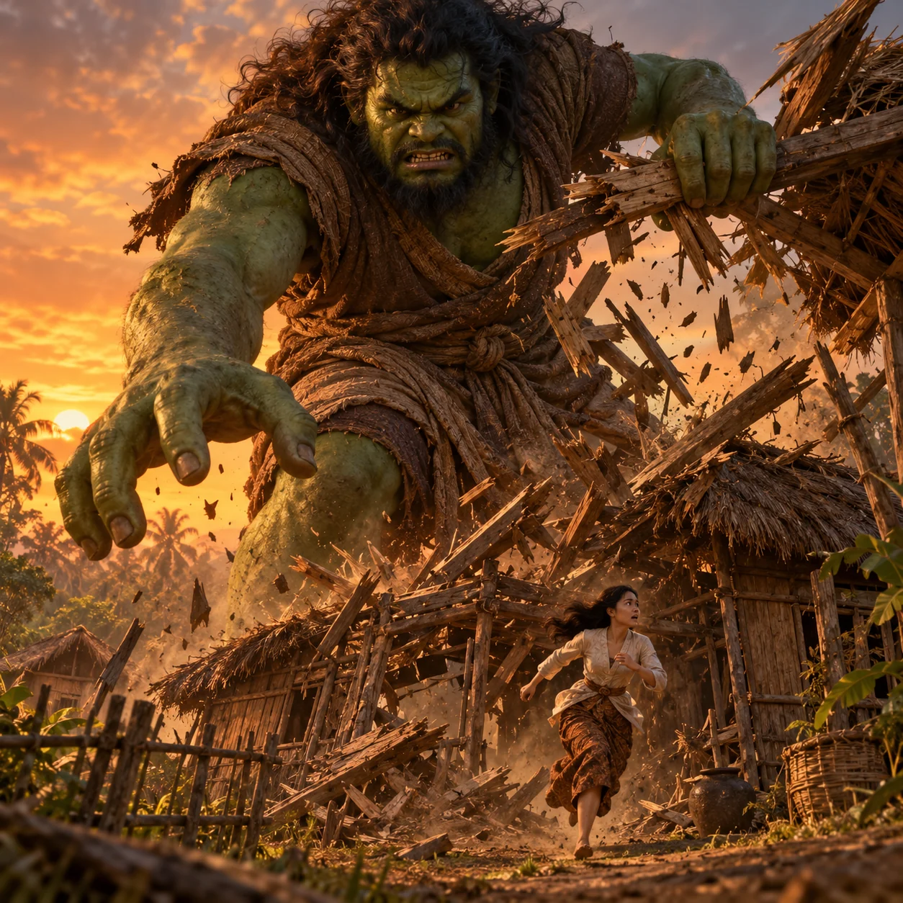
Green giant tearing apart the shack during the chase.
Aura: His immense strength physically splinters the shack and hurls wooden fragments, the documented destruction during the chase; no magical glow. [buto-ijo-c04, buto-ijo-c12]
Audit ciri dan sumber
- [object Object]
- [object Object]
- [object Object]
Viewed native1254x1254 and200x200 thumbnail. All7 Uji Sangar pass: subject dominant and imposing at200px, sourced moment active, effects traceable, anatomy counted, no text/watermark/frame or recognizable franchise design, no ordinary/cute/static reading. One green giant dominates, crushing an adjacent hut as direct size comparator while Timun Mas flees clothed and unharmed. One head/two arms/five fingers per hand/two legs, opaque coarse cloth, no superhero identifiers; wrecked wood follows c04/c12.
Review sumberONE original square premium painterly cinematic Mitoloka illustration of Buto Ijo, the tall green giant pursuing Timun Mas.
ANATOMY: One colossal adult male humanlike green-skinned giant, one head, two human arms with five fingers each, two legs; rough green face and exposed green hands, wearing an opaque coarse earth-brown wrapped tunic and knee-length cloth, no horns, tusks or superhero anatomy. [buto-ijo-c01, buto-ijo-c02, buto-ijo-c12, buto-ijo-c13]
MOMENT: Smash through Mbok Srini's wooden shack toward the viewer, one huge hand snapping the roof beam and the other reaching down. The crushed shack directly at his shins proves his immense scale. His furious glaring face fills the upper third; a tiny fully clothed young woman runs away near the structure without injury.
POWER: His immense strength physically splinters the shack and hurls wooden fragments, the documented destruction during the chase; no magical glow. [buto-ijo-c04, buto-ijo-c12]
SCALE & CAMERA / LIGHT & WEATHER: The giant dominates from close low angle; the adjacent hut provides direct scale. One low orange sunset source, deep walnut shadows, dense airborne wood dust.
SURFACE: tactile worn natural surfaces, dense shadows and sharp highlights; painterly material detail, never plastic.
SETTING: Mbok Srini's simple rural Javanese shack during the pursuit, plain wood and thatch, not a fantasy city. [buto-ijo-c01, buto-ijo-c04]
MOOD: imposing, dangerous or awe-inspiring; startling anatomy and forceful action, never ordinary, cute, calm or decorative.
HARD CONSTRAINTS: no text, lettering, signature, symbol, logo, border, frame or watermark, including corners; no extra heads, eyes or limbs; no film, game, anime or comic design; no nudity or explicit gore; no generic glowing aura, neon outline or energy ribbons.
Palasik
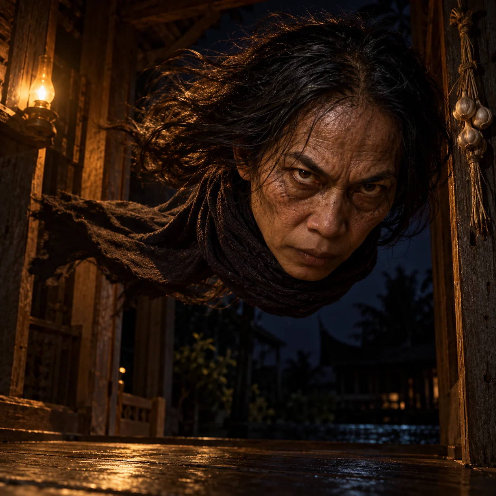
Detached Palasik head wrapped at neck, moving through a doorway.
Aura: The detached head moves independently at night, the documented supernatural action. No invented fire or magical aura. [palasik-c06, palasik-c07]
Audit ciri dan sumber
- [object Object]
- [object Object]
- [object Object]
Viewed native1254x1254 and200x200 thumbnail. All7 Uji Sangar pass: subject dominant and imposing at200px, sourced moment active, effects traceable, anatomy counted, no text/watermark/frame or recognizable franchise design, no ordinary/cute/static reading. One detached mature head floats with clear empty space beneath, wrapped neck without wounds; smooth upper-lip philtrum area, two natural eyes, garlic at doorway. Swept hair/scarf depict nocturnal motion c06/c07/c11; no body, prey or gore.
Review sumberONE original square premium painterly cinematic Mitoloka illustration of Palasik kuduang, the detached-head night hunter of Minangkabau belief.
ANATOMY: Exactly ONE living human head detached from its off-frame body, with one natural pair of eyes and a distinctly smooth upper lip lacking a philtrum groove. A thick fully opaque dark scarf encloses the entire lower neck; no cut surface, organs, blood or exposed tissue. Mature adult face, weathered skin and coarse black hair; no horns, fangs or glowing eyes. [palasik-c06, palasik-c07, palasik-c11]
MOMENT: Sweep toward the viewer through a dark house doorway at night, floating head tilted forward with an unnervingly focused searching gaze, hair and scarf pulled backward by its movement. Its human body is wholly out of frame.
POWER: The detached head moves independently at night, the documented supernatural action. No invented fire or magical aura. [palasik-c06, palasik-c07]
SCALE & CAMERA / LIGHT & WEATHER: Extreme close low camera: detached head and trailing scarf occupy three quarters of the square; visible empty space beneath makes levitation unambiguous. One low amber house lamp from the side, dark timber and deep shadows.
SURFACE: tactile worn natural surfaces, dense shadows and sharp highlights; painterly material detail, never plastic.
SETTING: A West Sumatran house entrance at night; a small garlic bundle hangs at the far doorway edge as a documented protective object, with no child or prey visible. [palasik-c01, palasik-c07, palasik-c09]
MOOD: imposing, dangerous or awe-inspiring; startling anatomy and forceful action, never ordinary, cute, calm or decorative.
HARD CONSTRAINTS: no text, lettering, signature, symbol, logo, border, frame or watermark, including corners; no extra heads, eyes or limbs; no film, game, anime or comic design; no nudity or explicit gore; no generic glowing aura, neon outline or energy ribbons.
Nyi Blorong
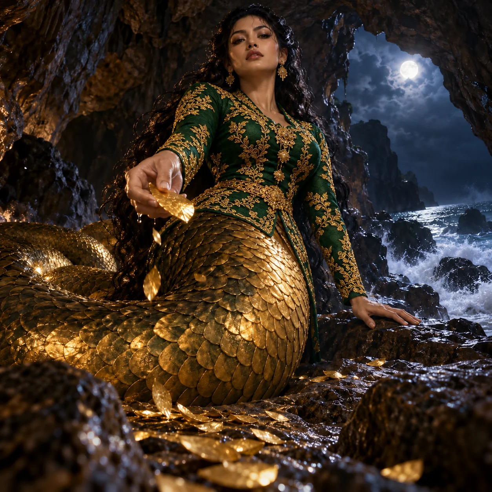
Green-kebaya Nyi Blorong rises on snake coils and sheds gold scales.
Aura: Pieces of gold are shed from her body's scales and fall physically onto the rock below; not glowing coins or levitating money. The lower body is her documented giant snake form, no extra magic. [nyi-blorong-c05, nyi-blorong-c08, nyi-blorong-c18]
Audit ciri dan sumber
- [object Object]
- [object Object]
- [object Object]
Viewed native1254x1254 and200x200. All7 Uji Sangar pass: massive golden serpent coils and commanding human torso dominate, scale-offering action c08/c18 and immense lower body c05 read at200px, gold physically falls, exactly one head/two arms/one serpentine lower body/no legs, fully opaque emerald kebaya after edit02, no text/watermark/border/franchise design. Awe through direct gaze, low camera and serpent coils, not an ordinary woman. No generic aura or invented powers.
Review sumberEdit only the kebaya fabric on Nyi Blorong in the reference image. Replace all sheer or transparent lace on BOTH sleeves, upper chest, shoulders and torso with continuous FULLY OPAQUE dense dark emerald-green silk embroidered with gold. The forearms must be covered with solid green cloth all the way to the wrists; no skin visible through the sleeves. Keep the exact same original face, hair, two hands, gold scale offering and falling scales, massive single golden serpent lower body and coils, cave, southern ocean, moonlight, lighting, framing, mood and all other details unchanged. Keep a regal commanding spirit, no nudity, no extra limbs, no text, signature, logo, watermark, border or frame.
蝹
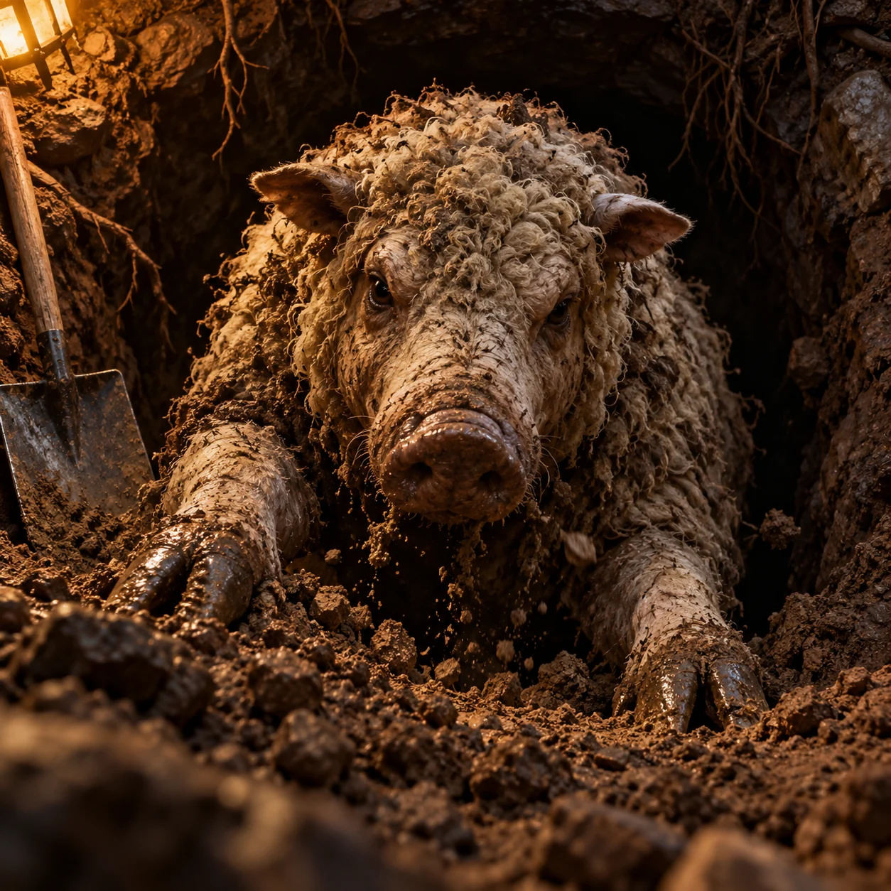
Ao heaves out of its excavation pit, sheep-and-pig anatomy explicit.
Aura: No documented attack power. Moving soil falls from its wool as it rises; the underground emergence follows the excavation account. No brain-eating, bodies or gore. [wd-q17060601-c02, wd-q17060601-c10]
Audit ciri dan sumber
- [object Object]
- [object Object]
- [object Object]
Native1254² and200px inspected: all7 Uji Sangar pass. A blunt pig muzzle on a coarse sheep-wool body rises from the dug pit c01/c07/c02, staring directly outward while forefeet push soil. Menacing close scale retains animal's natural size (shovel comparator), no giant claim. One head/two eyes/two ears/two visible cloven forefeet and hindquarters occluded by pit; no extra anatomy, horns or novel spines. Soil displacement is natural physical emergence from underground c10. No brains, gore, text, watermark, border or entertainment design.
Review sumberONE original square premium painterly cinematic Mitoloka illustration of Ao, the underground sheep-and-piglike creature in the Soushen Ji.
ANATOMY: ONE unsettling quadruped, like a sheep yet not a sheep and like a pig yet not a pig: dense filthy coarse sheeplike wool on a compact piglike body, a broad blunt piglike muzzle integrated with a long sheeplike face, two small natural ears and two dark eyes, four sturdy cloven feet. No horns, spines or tusks; no novel-only spiny variant. [wd-q17060601-c01, wd-q17060601-c07]
MOMENT: Heave upward out of a freshly dug deep earthen pit directly toward the viewer, forefeet thrust over the edge and face glaring from the collapsing earth. A plain old shovel at one side and the dark pit behind show that the animal has just been dug up.
POWER: No documented attack power. Moving soil falls from its wool as it rises; the underground emergence follows the excavation account. No brain-eating, bodies or gore. [wd-q17060601-c02, wd-q17060601-c10]
SCALE & CAMERA / LIGHT & WEATHER: Extreme tight low angle at the pit lip; no giant scale, a shovel is ordinary size. One low amber lantern source off-frame, wet soil and coarse wool, deep underground shadows.
SURFACE: tactile worn natural surfaces, dense shadows and sharp highlights; painterly material detail, never plastic.
SETTING: Dark underground earth in Chencang during the old Qin account, a plain excavation pit with roots and rough stone, no modern machinery. [wd-q17060601-c02, wd-q17060601-c07, wd-q17060601-c10]
MOOD: imposing, dangerous or awe-inspiring; startling anatomy and forceful action, never ordinary, cute, calm or decorative.
HARD CONSTRAINTS: no text, lettering, signature, symbol, logo, border, frame or watermark, including corners; no extra heads, eyes or limbs; no film, game, anime or comic design; no nudity or explicit gore; no generic glowing aura, neon outline or energy ribbons.
朱獳
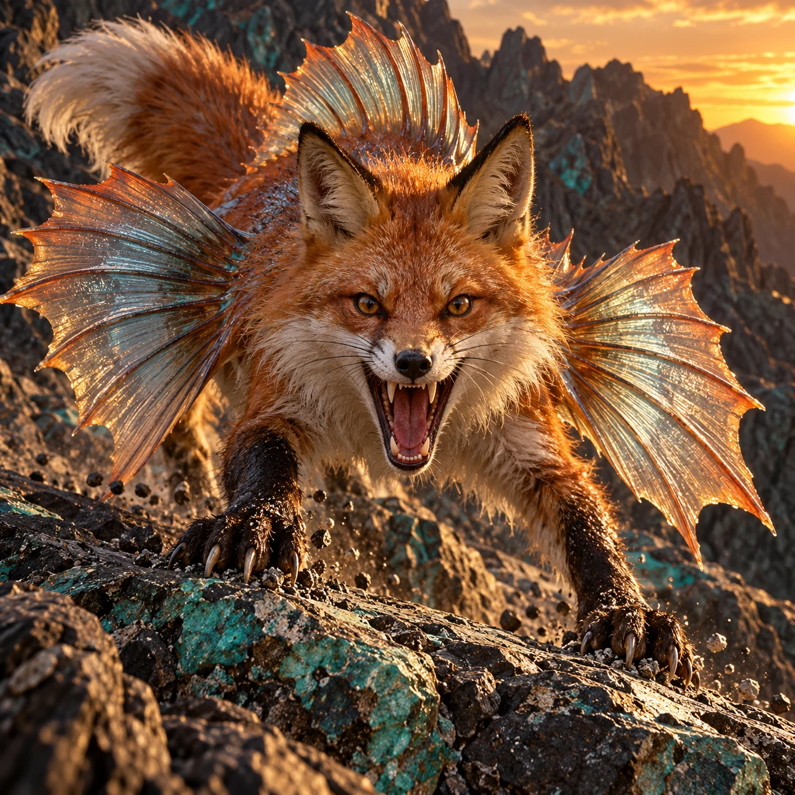
Zhurou lunges over Mount Geng rock with its natural fish fins flared.
Aura: Its appearance portends fear, without any documented projected attack or magic. Menace comes from the unnatural fish-finned fox anatomy and cry, not an invented power. [wd-q22099088-c02, wd-q22099088-c03]
Audit ciri dan sumber
- [object Object]
- [object Object]
- [object Object]
Viewed native1254² and200px. All7 Uji Sangar pass: unmistakable foreground creature, imposing presence retained at200, active sourced moment, effects mapped, anatomy counted, no text/watermark/frame/franchise, no ordinary/cute/calm reading. Fox face and body with large natural ribbed fish fins c01, claws thrust over barren shuibi rock c03, mouth open in cry c02. No projected fear spell and no invented wings.
Review sumberONE original square premium painterly cinematic Mitoloka illustration of Zhurou, the foxlike fish-finned portent on Mount Geng.
ANATOMY: One adult FOX-shaped mammal with one head, two pointed ears, two natural eyes, four fox legs and one bushy fox tail; prominent FISH FINS grow along both flanks and the back, ribbed translucent natural fish membranes rather than feather wings. Fins are large enough to read at thumbnail size. No feathered wings, horns, extra limbs or glowing eyes. [wd-q22099088-c01]
MOMENT: Lunge from bare turquoise-streaked rock directly toward the viewer, jaws open in a sharp animal cry, both long flank fins flared like rigid fish sails. Forefeet claw the foreground stone, throwing ordinary grit.
POWER: Its appearance portends fear, without any documented projected attack or magic. Menace comes from the unnatural fish-finned fox anatomy and cry, not an invented power. [wd-q22099088-c02, wd-q22099088-c03]
SCALE & CAMERA / LIGHT & WEATHER: Very close low camera, all fins and fox head inside square, no giant scale. One hard amber sunset side light against deep walnut mountain shadow, coarse fox fur and wet ribbed fins.
SURFACE: tactile natural material, rough lived-in textures; never smooth plastic.
SETTING: Plantless Mount Geng: barren dark mountain rock with abundant blue-green shuibi stone. No trees, grass, water or invented temple; keep any snakes outside the frame to isolate the main subject. [wd-q22099088-c03]
MOOD: imposing, dangerous or awe-inspiring through the sourced form and physical action; never ordinary, cute, calm or decorative.
HARD CONSTRAINTS: no text, lettering, signature, symbol, logo, border, frame or watermark anywhere; no extra heads, eyes or limbs; no borrowed film, game, anime or comic design; no nudity or explicit gore; no generic glow aura, neon outline, energy ribbons or magical runes.
䑏疏
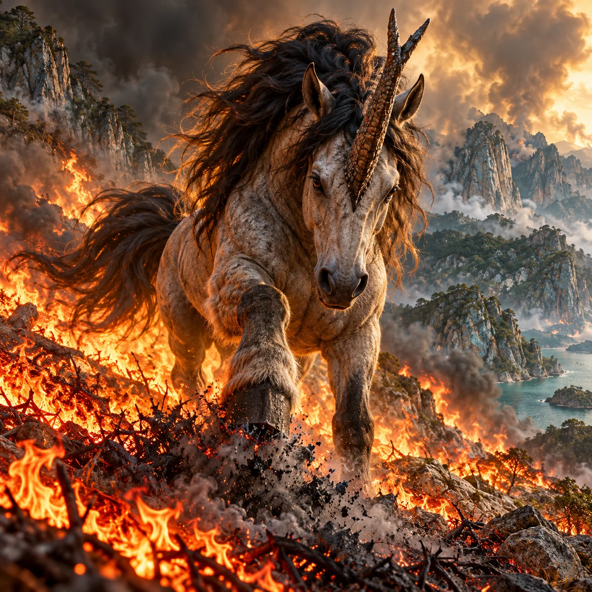
One branching-horn Quanshu charges and suppresses wildfire on Mount Dai.
Aura: Suppress fire: advancing orange flames immediately in front of its raised hoof collapse into black embers and smoke while the neighboring ground still burns. Fire visibly stops at the creature; no aura, forcefield, glyphs or luminous ring. [wd-q22100560-c05, wd-q22100560-c09]
Audit ciri dan sumber
- [object Object]
- [object Object]
- [object Object]
Viewed native1254² and200px. All7 Uji Sangar pass: unmistakable foreground creature, imposing presence retained at200, active sourced moment, effects mapped, anatomy counted, no text/watermark/frame/franchise, no ordinary/cute/calm reading. Exactly one central rough-scaled horn with branched tip c01/c02/c08 on a horselike body. One raised forehoof smothers the local fire into black ash c05/c09, direct stern gaze. Background distant mountains do not assert giant size.
Review sumberONE original square premium painterly cinematic Mitoloka illustration of Quanshu, the one-horned horselike fire-suppressing beast of Mount Dai.
ANATOMY: Exactly ONE horse-shaped creature, one horse head with two ears and two eyes, four normal hoofed horse legs, one mane and one tail. Exactly ONE long central forehead horn, its surface rough and overlapping-scaled with a visibly branching tip, never a second horn. A mature powerful equine face, no wings or antlers elsewhere. [wd-q22100560-c01, wd-q22100560-c02, wd-q22100560-c08]
MOMENT: Drive forward down the rocky slope directly toward the viewer, raise one forehoof above a line of advancing wildfire. The central branching horn cuts a strong silhouette; its whole horselike body fills the foreground.
POWER: Suppress fire: advancing orange flames immediately in front of its raised hoof collapse into black embers and smoke while the neighboring ground still burns. Fire visibly stops at the creature; no aura, forcefield, glyphs or luminous ring. [wd-q22100560-c05, wd-q22100560-c09]
SCALE & CAMERA / LIGHT & WEATHER: Ground-level low angle, close equine framing; no invented giant size, rock and fire provide physical grounding. One dominant wildfire light source, black smoke and warm gold rim on coarse mane, deep walnut shadows.
SURFACE: tactile natural material, rough lived-in textures; never smooth plastic.
SETTING: Mount Dai, jade-veined high rock above blue-green stones below, the land and water account's mountain setting. [wd-q22100560-c03, wd-q22100560-c04]
MOOD: imposing, dangerous or awe-inspiring through the sourced form and physical action; never ordinary, cute, calm or decorative.
HARD CONSTRAINTS: no text, lettering, signature, symbol, logo, border, frame or watermark anywhere; no extra heads, eyes or limbs; no borrowed film, game, anime or comic design; no nudity or explicit gore; no generic glow aura, neon outline, energy ribbons or magical runes.
丹鱼
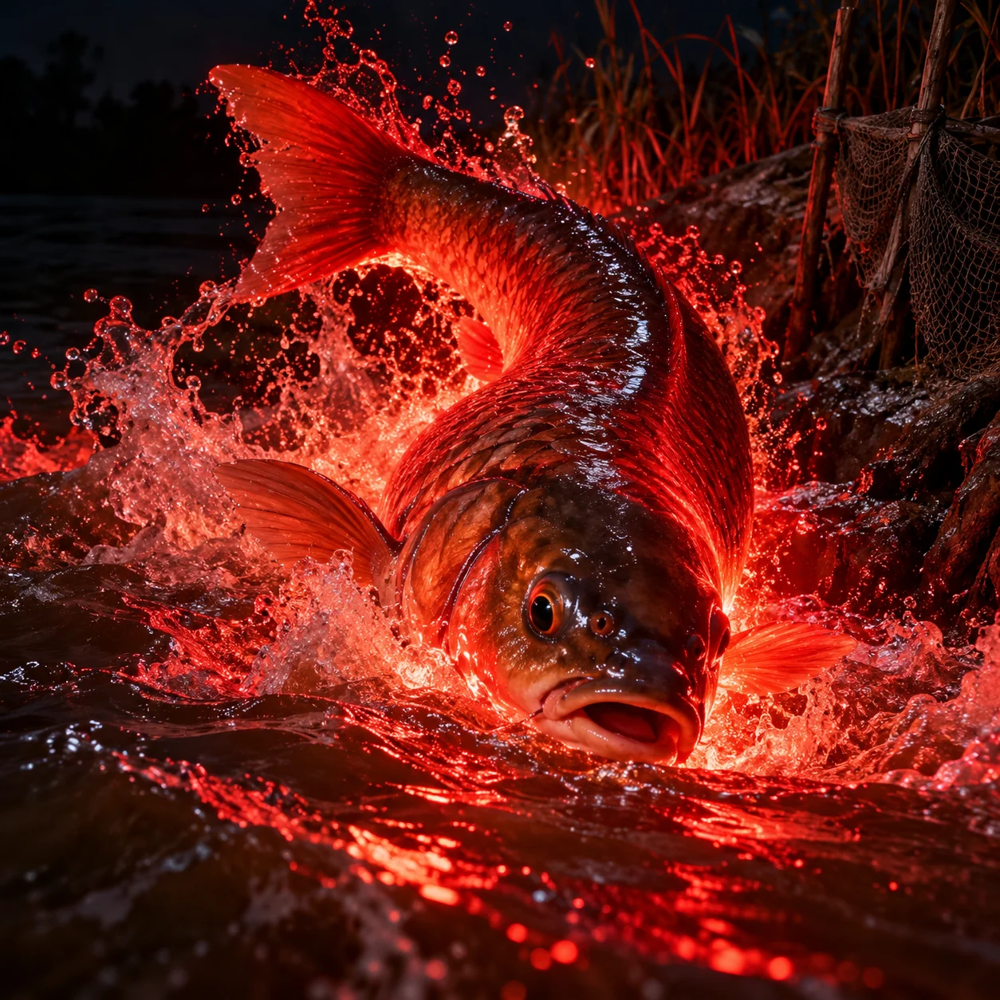
Danyu surfaces at the riverbank, upward crimson radiance blazing through the spray.
Aura: The documented RED LIGHT surrounding its coming and going shines UPWARD from the surfacing fish, blazing like fire. It physically illuminates spray, reed edges and the riverbank in deep crimson, while the river outside this pool is black. Radiance is source-specific c02/c05, not an added aura; no actual burning fish or magical runes. [wd-q9384676-c02, wd-q9384676-c05]
Audit ciri dan sumber
- [object Object]
- [object Object]
- [object Object]
Viewed native1254² and200px. All7 Uji Sangar pass: unmistakable foreground creature, imposing presence retained at200, active sourced moment, effects mapped, anatomy counted, no text/watermark/frame/franchise, no ordinary/cute/calm reading. Natural single fish curves at the night river edge, scales/fins/one tail clearly visible. Deep upward red light c02/c05 physically lights splash and bank, source-specific radiance rather than generic aura; no blood or waterwalking depiction. Small ring beside near eye is fish nostril, not a third eye.
Review sumberONE original square premium painterly cinematic Mitoloka illustration of Danyu, the Dan-river fish whose upward red radiance blazes like fire.
ANATOMY: Exactly ONE clearly visible mature natural freshwater FISH with one fish head, two eyes, gill plates, overlapping scales, ordinary fins and ONE fish tail. No dragon face, horns, wings, teeth like a monster, extra tails or humanoid face; its exact natural fish species is an editorial choice because the text does not specify it. [wd-q9384676-c01]
MOMENT: Surge up at the river's edge at night, body flexed in a forceful S-bend and head pushing through the water directly toward the camera; splash and upward red light fill the square. A small old fishing net hangs at the far bank edge but does not obscure the fish.
POWER: The documented RED LIGHT surrounding its coming and going shines UPWARD from the surfacing fish, blazing like fire. It physically illuminates spray, reed edges and the riverbank in deep crimson, while the river outside this pool is black. Radiance is source-specific c02/c05, not an added aura; no actual burning fish or magical runes. [wd-q9384676-c02, wd-q9384676-c05]
SCALE & CAMERA / LIGHT & WEATHER: Waterline macro low angle, fish face and curving scaled body dominate, not a distant fish or empty river landscape. ONE source-specific deep red radiance dominates a black-walnut night, harsh crimson highlights on wet scales and spray.
SURFACE: tactile natural material, rough lived-in textures; never smooth plastic.
SETTING: The night bank of the Dan river, ten days before summer solstice; shallow muddy river edge, ordinary reeds and fishing net mentioned in the catching account. [wd-q9384676-c04, wd-q9384676-c05, wd-q9384676-c08]
MOOD: imposing, dangerous or awe-inspiring through the sourced form and physical action; never ordinary, cute, calm or decorative.
HARD CONSTRAINTS: no text, lettering, signature, symbol, logo, border, frame or watermark anywhere; no extra heads, eyes or limbs; no borrowed film, game, anime or comic design; no nudity or explicit gore; no generic glow aura, neon outline, energy ribbons or magical runes.
Zarrouco
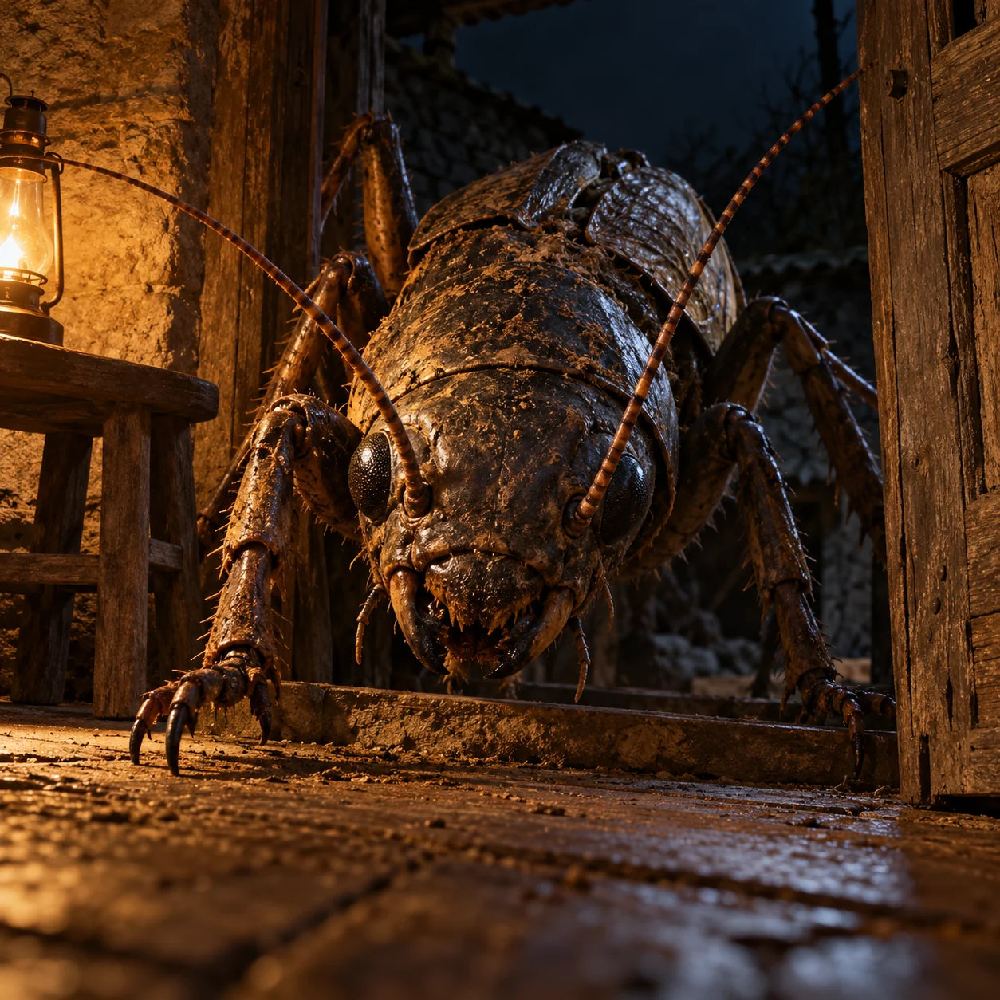
Zarrouco in its huge insect form forces into a night doorway.
Aura: No documented supernatural power; looming insect anatomy, aggressive forward crawl and the huge scale carry the menace. Ordinary dirt shakes off the carapace, no venom rays or aura. [zarrouco-c01, zarrouco-c02]
Audit ciri dan sumber
- [object Object]
- [object Object]
- [object Object]
Native1254² and200px inspected: all7 Uji Sangar pass. Foreground creature dominates and retains menace at200, active moment, all effects physical and sourced, anatomy counted, no text/watermark/frame or recognizable franchise design, no ordinary/cute/static reading. A huge ugly six-legged insect forces through a doorway, its broad head nearly stool-size c01/c02. One pair of antennae, natural mandibles, six legs with rear pair partially occluded; no eight-legged spider or mammal anatomy. It crawls toward the camera; no invented magic.
Review sumberONE original square premium painterly cinematic Mitoloka illustration of Zarrouco, the huge hideous insect bogey of Galician tradition.
ANATOMY: ONE huge ugly INSECT, with exactly six jointed legs in three pairs, one segmented thorax and abdomen, one head with two antennae, hard chewing mouthparts and two dark compound eyes. Use a dark rough cricket-like insect interpretation: leathery wing covers folded, coarse knobbled carapace, no human face, mammal teeth, horns or spider's eight legs. [zarrouco-c01, zarrouco-c02, zarrouco-c04]
MOMENT: Crawl forcefully through a narrow night doorway toward the viewer, one front pair of hooked insect feet grasping the lintel and ground, the other four legs bracing outside. The insect's head is nearly as broad as a small wooden stool beside it, making its documented huge size clear.
POWER: No documented supernatural power; looming insect anatomy, aggressive forward crawl and the huge scale carry the menace. Ordinary dirt shakes off the carapace, no venom rays or aura. [zarrouco-c01, zarrouco-c02]
SCALE & CAMERA / LIGHT & WEATHER: Floor-level low angle with massive head and six leg roots legible, single low amber lamp from one side, deep walnut darkness. Tactile worn chitin, splintered timber, ordinary airborne dust.
SURFACE: tactile natural material, rough lived-in textures; never smooth plastic.
SETTING: A dark Galician rural house threshold at night, editorial place for the child-scaring bogey; no child, victim or invented sacred architecture. [zarrouco-c01, zarrouco-c02]
MOOD: imposing, dangerous or awe-inspiring through the sourced form and physical action; never ordinary, cute, calm or decorative.
HARD CONSTRAINTS: no text, lettering, signature, symbol, logo, border, frame or watermark anywhere; no extra heads, eyes or limbs; no borrowed film, game, anime or comic design; no nudity or explicit gore; no generic glow aura, neon outline, energy ribbons or magical runes.
Centicore
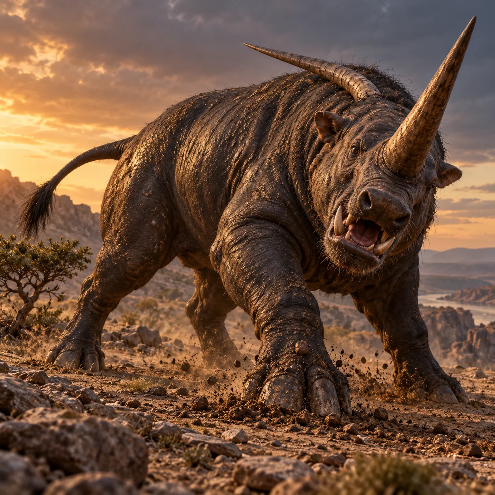
Pliny's eale/centicore pivots its two horns in combat.
Aura: No documented projected power; the two movable horns physically change direction for combat and the hippo-sized animal displaces earth by its weight. No magic. [centicore-c01, centicore-c05]
Audit ciri dan sumber
- [object Object]
- [object Object]
- [object Object]
Native1254² and200px inspected: all7 Uji Sangar pass. Foreground creature dominates and retains menace at200, active moment, all effects physical and sourced, anatomy counted, no text/watermark/frame or recognizable franchise design, no ordinary/cute/static reading. Pliny's eale variant: river-horse mass, black hide, boar jaws/tusks, elephant tail, exactly two long horns with one aimed forward and one rotated back c01/c03/c05. Four legs, ground kicked up during combat turn. No mixing in c02 horse/chest/mouth-ear form; no projected power.
Review sumberONE original square premium painterly cinematic Mitoloka illustration of Centicore or eale, the movable-horned beast in Pliny's account.
ANATOMY: ONE huge quadruped the size of a river-horse, BLACK or tawny coarse hide, a broad wild BOAR'S jaw, four strong hoofed legs, an ELEPHANT'S thin rope tail with coarse hair tip, and exactly TWO long straight sharp movable horns more than a cubit long. In this combat moment one horn aims forward toward camera and the other swivels backward along the head. NO trunk, no horse mane, no wings, no ordinary bovine face. [centicore-c01, centicore-c03, centicore-c05]
MOMENT: Wrench its head around toward the viewer as if countering a blow, front hooves ploughing the earth, one long straight horn aimed forward and the other rotated backward. Open the broad boar jaw in an angry grunt; no victim or gore.
POWER: No documented projected power; the two movable horns physically change direction for combat and the hippo-sized animal displaces earth by its weight. No magic. [centicore-c01, centicore-c05]
SCALE & CAMERA / LIGHT & WEATHER: Extreme low three-quarter side view makes both horn directions and the elephant tail visible. A tiny adjacent scrub tree only reaches the heavy beast's flank, consistent with river-horse size. One low amber dusk side light, dark black hide and ordinary soil dust.
SURFACE: tactile natural material, rough lived-in textures; never smooth plastic.
SETTING: A sparse stony Aethiopian ground, editorial rocky landscape for Pliny's stated habitat, no invented medieval heraldic shield or inscription. [centicore-c04]
MOOD: imposing, dangerous or awe-inspiring through the sourced form and physical action; never ordinary, cute, calm or decorative.
HARD CONSTRAINTS: no text, lettering, signature, symbol, logo, border, frame or watermark anywhere; no extra heads, eyes or limbs; no borrowed film, game, anime or comic design; no nudity or explicit gore; no generic glow aura, neon outline, energy ribbons or magical runes.
Gatto mammone
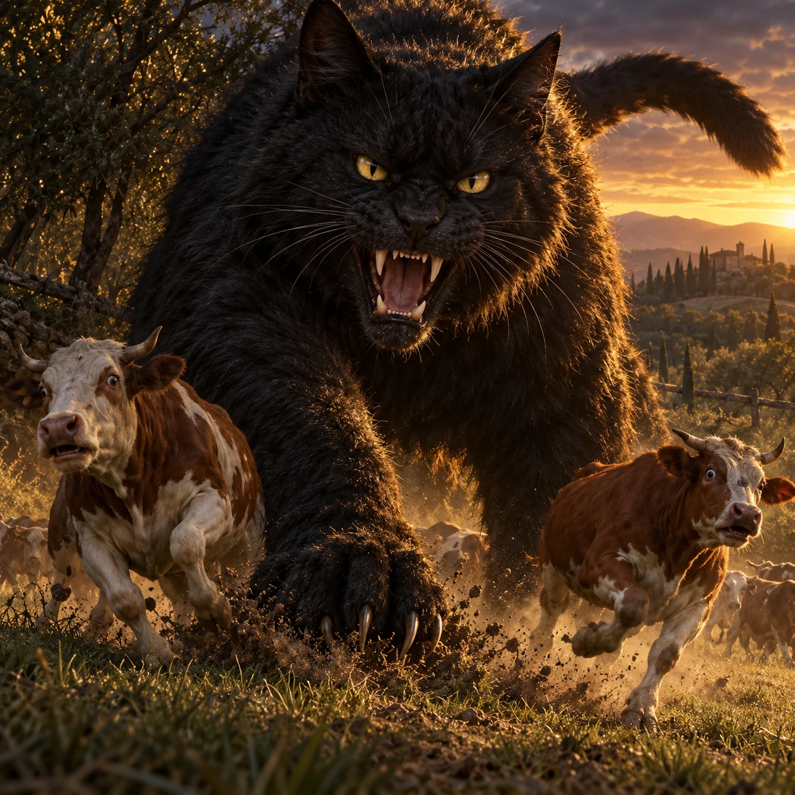
Giant black Gatto Mammone bursts toward a terrified cow herd.
Aura: The giant cat frightens grazing herds with uncanny movements and a cry between roar and meow. No projected spell, magic glow or victims being eaten; ordinary hoof dust and flattened grass. [gatto-mammone-c03, gatto-mammone-c04, gatto-mammone-c12]
Audit ciri dan sumber
- [object Object]
- [object Object]
- [object Object]
Native1254² and200px inspected: all7 Uji Sangar pass. Creature unmistakable and imposing at200, active sourced form/moment, effects physical, anatomy checked, no text/watermark/frame or recognizable franchise design, no ordinary/cute/static portrait. One immense completely black domestic-cat-shaped monster c01/c11 bursts between two adjacent fleeing cows c03/c12. The nearby cows directly establish extraordinary size, avoiding ordinary black cat/panther reading. One head/two ears/two eyes/four legs/one tail; snarl and hard forepaw contact active; no magical effects or harm.
Review sumberONE original square premium painterly cinematic Mitoloka illustration of Gatto Mammone, the enormous black cat monster that frightens grazing cattle.
ANATOMY: ONE huge completely BLACK CAT, one mature domestic-catlike head with two pointed ears, two natural eyes, four feline legs with sharp retractile claws and one long cat tail. Dense black fur and a broad distinctly catlike muzzle, never a leopard, tiger, monkey or werewolf. Its head is larger than an adjacent adult cow's whole torso; the great cat is unquestionably enormous. [gatto-mammone-c01, gatto-mammone-c11, gatto-mammone-c12]
MOMENT: Spring from dark cover toward the viewer and the grazing herd, one great forepaw striking earth beside a cow; bare feline teeth while giving the documented roar-meow cry. Two ordinary cows immediately beside its legs recoil and flee, completely unharmed. Its black face looms above them with a fierce direct gaze.
POWER: The giant cat frightens grazing herds with uncanny movements and a cry between roar and meow. No projected spell, magic glow or victims being eaten; ordinary hoof dust and flattened grass. [gatto-mammone-c03, gatto-mammone-c04, gatto-mammone-c12]
SCALE & CAMERA / LIGHT & WEATHER: Extreme low camera under the looming front paws; direct cow-to-cat contact scale, not cows far away. One narrow antique-gold dusk side light outlines coarse black fur, deep walnut pasture shadows and dust.
SURFACE: rough natural textures, dense tactile fur, feather, fire, hide, weathered cloth or stone as applicable; no plastic surfaces.
SETTING: The dark isolated edge of an Italian pasture in the Valdichiana tradition; grazing cows directly alongside the great cat establish physical size. [gatto-mammone-c10, gatto-mammone-c12]
MOOD: dangerous, imposing or awe-inspiring, alive in a forceful moment; never ordinary, cute, placid, static or decorative.
HARD CONSTRAINTS: no text, lettering, signature, symbols, logo, border, frame or watermark anywhere; no extra heads, eyes, fingers or limbs; no film, game, anime or comic design; no nudity or explicit gore; no generic glowing aura, neon outline or energy ribbons.
Lampago
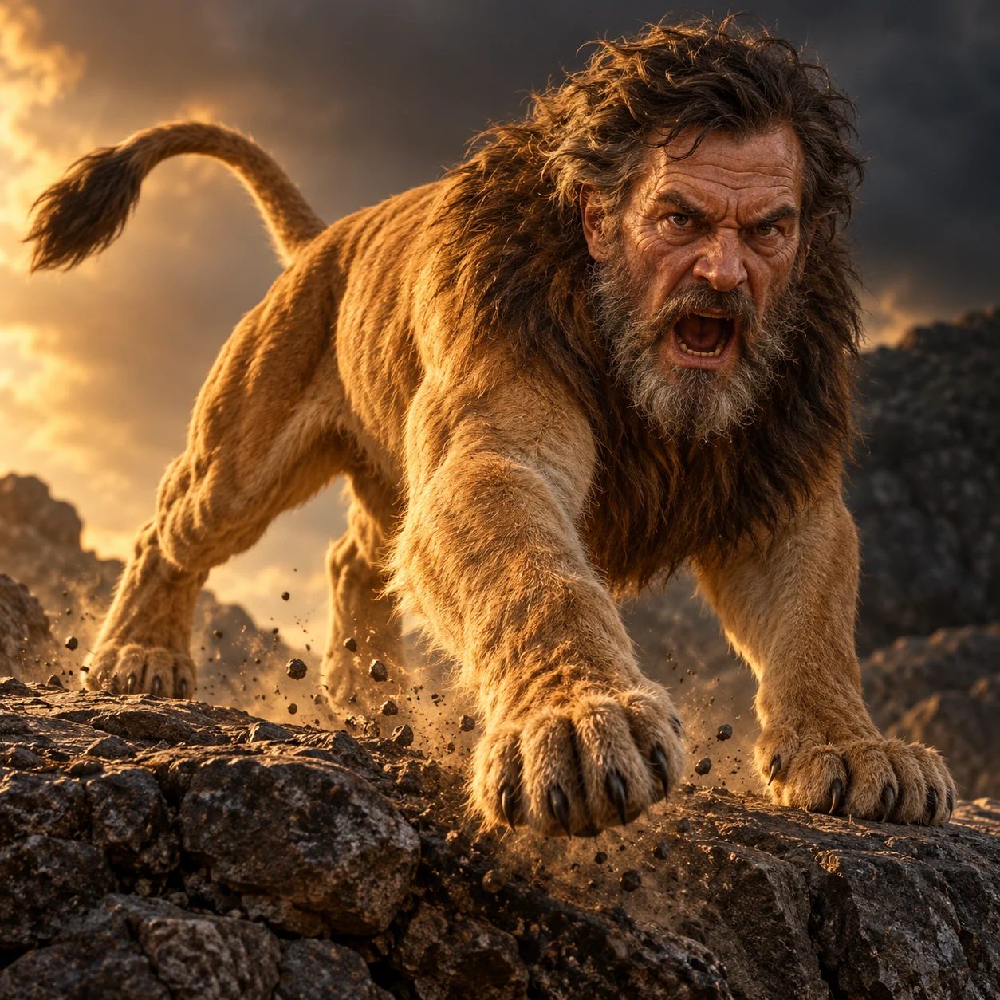
Hornless human-headed lion Lampago leaps from a ledge.
Aura: No supernatural attack power is documented; menace comes from the startling human head on the charging feline body and the physical rock dust kicked up by its paws. [lampago-c01, lampago-c06]
Audit ciri dan sumber
- [object Object]
- [object Object]
- [object Object]
Native1254² and200px inspected: all7 Uji Sangar pass. Creature unmistakable and imposing at200, active sourced form/moment, effects physical, anatomy checked, no text/watermark/frame or recognizable franchise design, no ordinary/cute/static portrait. One mature man's head on a full lion body with exactly four lion legs and paws, no human arms/torso. Tufted tail, no horns. The hornless c06 variant chosen with man-lion c01, recorded explicitly; lunging paws kick rock dust, no supernatural power or giant size. Human face remains intense at200.
Review sumberONE original square premium painterly cinematic Mitoloka illustration of Lampago, the hornless man-headed lion of heraldry rendered as a living creature.
ANATOMY: Exactly ONE mature HUMAN MAN'S HEAD on a full LION body. The entire neck, muscular torso, exactly FOUR legs and all four feet are FELINE; absolutely NO human torso, shoulders, arms or hands. One lion tail with natural tuft. Old man's face and coarse dark hair, natural two human eyes, no horns, wings, fangs or animal snout on the human face. [lampago-c01, lampago-c06]
MOMENT: Bound over a stone ledge toward the viewer, one immense lion forepaw thrust forward and the other braced on the rock, the human head glowering with the mouth open in a wordless shout. Its single feline torso curves through the leap, all four leg roots unambiguous.
POWER: No supernatural attack power is documented; menace comes from the startling human head on the charging feline body and the physical rock dust kicked up by its paws. [lampago-c01, lampago-c06]
SCALE & CAMERA / LIGHT & WEATHER: Low three-quarter angle, tight natural lion-scale framing, entire hybrid silhouette inside the square. One hard amber side light, deep walnut shadows, matted tawny lion fur, weathered human skin and ordinary rock grit.
SURFACE: rough natural textures, dense tactile fur, feather, fire, hide, weathered cloth or stone as applicable; no plastic surfaces.
SETTING: A plain dark rocky ledge as editorial terrain, not a factual habitat. The source context is Devon heraldry, but show a living beast with no shield, heraldic field or architectural claims. [lampago-c03]
MOOD: dangerous, imposing or awe-inspiring, alive in a forceful moment; never ordinary, cute, placid, static or decorative.
HARD CONSTRAINTS: no text, lettering, signature, symbols, logo, border, frame or watermark anywhere; no extra heads, eyes, fingers or limbs; no film, game, anime or comic design; no nudity or explicit gore; no generic glowing aura, neon outline or energy ribbons.
Loogaroo
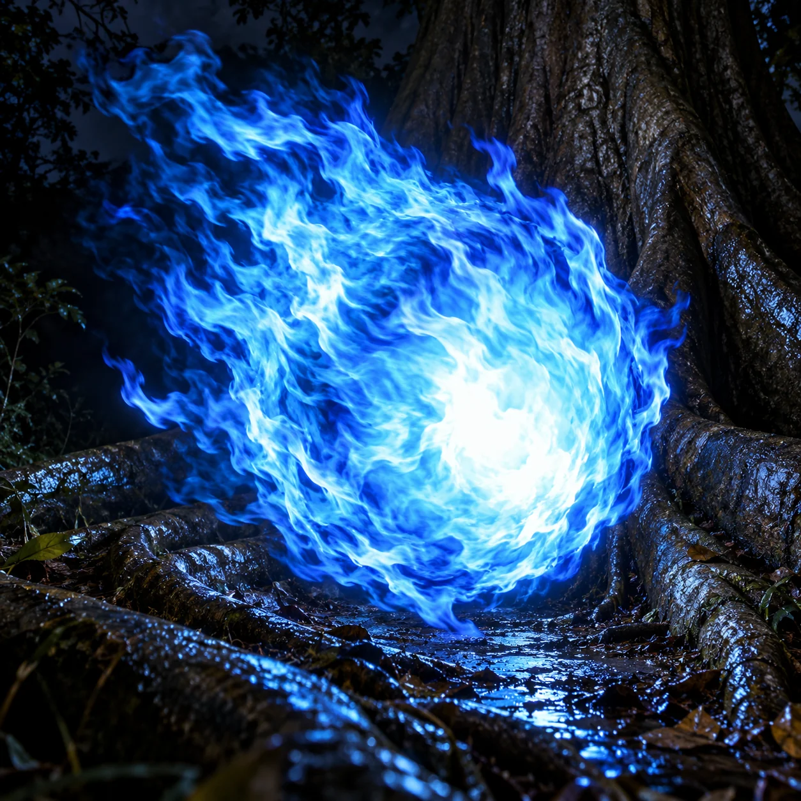
Loogaroo's blue fireball rushes from a silk-cotton tree at night.
Aura: The documented witch form becomes a flame or bright blue ball of light that roams the night seeking blood. Depict only this active fireball form; no blood or skin shedding shown, no invented lightning or other powers. [loogaroo-c03, loogaroo-c05]
Audit ciri dan sumber
- [object Object]
- [object Object]
- [object Object]
Native1254² and200px inspected: all7 Uji Sangar pass. Main manifestation dominates and retains threatening or awe-inspiring presence at200; active sourced moment, effects mapped, anatomy checked, no text/watermark/frame or recognizable franchise design, no ordinary/cute/calm portrait. One compact blue fireball, dense white-blue center and actual backward-streaming flame tongues c03/c05, moves toward viewer from silk-cotton tree c05. No humanoid anatomy or aura substituted; fire is the sourced bodily manifestation, illuminates wet roots. No victims, skin or gore.
Review sumberONE original square premium painterly cinematic Mitoloka illustration of Loogaroo, the vampiric fireball or corpse-candle form of Caribbean folklore.
ANATOMY: ONE compact moving BALL OF ACTUAL BRIGHT BLUE FLAME with a dense brilliant central flame core and ragged flickering tongues of fire; this fireball IS the being, not an aura around a humanoid. NO face, eyes, head, wings, horns, human silhouette or exposed skin, and no additional fireballs. [loogaroo-c03, loogaroo-c05]
MOMENT: Rush out from beside the roots of a massive silk-cotton Devil Tree toward the viewer at night. The coherent spherical blue flame mass dominates the square, with vigorously backward-streaming tongues of fire showing purposeful movement, fierce light reflected on nearby wet tree roots.
POWER: The documented witch form becomes a flame or bright blue ball of light that roams the night seeking blood. Depict only this active fireball form; no blood or skin shedding shown, no invented lightning or other powers. [loogaroo-c03, loogaroo-c05]
SCALE & CAMERA / LIGHT & WEATHER: Root-level close camera, one fireball fills most of the square; no giant-size claim. The fireball itself is the single bright blue-white light source against black walnut bark and darkness; physically illuminated wet roots and ordinary dark air.
SURFACE: rough natural textures, dense tactile fur, feather, fire, hide, weathered cloth or stone as applicable; no plastic surfaces.
SETTING: Beside the buttress roots of a silk-cotton Devil Tree at night, the documented place where the skin is left, but keep skin and victims outside the image. [loogaroo-c05]
MOOD: dangerous, imposing or awe-inspiring, alive in a forceful moment; never ordinary, cute, placid, static or decorative.
HARD CONSTRAINTS: no text, lettering, signature, symbols, logo, border, frame or watermark anywhere; no extra heads, eyes, fingers or limbs; no film, game, anime or comic design; no nudity or explicit gore; no generic glowing aura, neon outline or energy ribbons.
Miernik
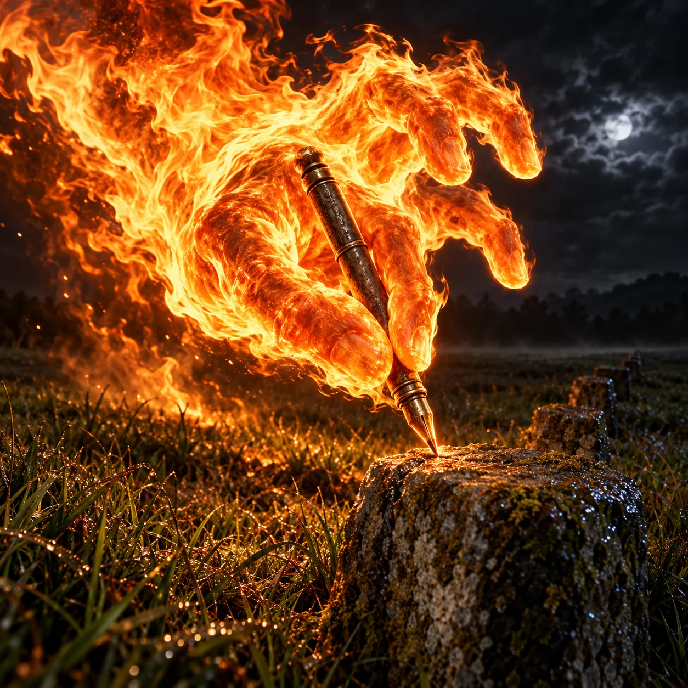
Miernik's fiery hand measures a field boundary with its pen.
Aura: The documented soul appears as a creeping or flying flame, including a fiery hand holding a pen. Fire lights the wet grass and boundary stones, without burning the whole meadow or producing a new spell. [miernik-c01, miernik-c03, miernik-c07]
Audit ciri dan sumber
- [object Object]
- [object Object]
- [object Object]
Native1254² and200px inspected: all7 Uji Sangar pass. Main manifestation dominates and retains threatening or awe-inspiring presence at200; active sourced moment, effects mapped, anatomy checked, no text/watermark/frame or recognizable franchise design, no ordinary/cute/calm portrait. Exactly one five-finger fire hand with pen c03, flying/creeping flame c01. Thumb/index hold pen, three other fingertips separately curled; touches a blank boundary stone in measured meadow c02/c07. No text on stone or legible inscription on plain pen, no full demon body or extra power.
Review sumberONE original square premium painterly cinematic Mitoloka illustration of Miernik, the dishonest surveyor's fiery-hand manifestation.
ANATOMY: Exactly ONE FIERY HUMAN HAND visibly formed from dense living orange fire, holding ONE plain antique PEN. Exactly five fingers total: thumb and index pinch the pen, middle/ring/little fingers curve separately above it. No head, human body, face, extra hand, paper, writing, symbols or letters. The sourced fire hand itself is the being. [miernik-c01, miernik-c03]
MOMENT: Glide low over a measured field boundary toward the viewer, the single fiery hand thrusting its pen down toward a boundary stone as though correcting the survey. Its fingers and flame tongues curl forcefully forward; the pen tip touches the stone without leaving any visible letters or marks.
POWER: The documented soul appears as a creeping or flying flame, including a fiery hand holding a pen. Fire lights the wet grass and boundary stones, without burning the whole meadow or producing a new spell. [miernik-c01, miernik-c03, miernik-c07]
SCALE & CAMERA / LIGHT & WEATHER: Very close ground-level view, fiery hand and pen occupy three quarters of square; no giant scale asserted. ONE orange-white flame source throws hard amber light across wet boundary stones against deep walnut night.
SURFACE: rough natural textures, dense tactile fur, feather, fire, hide, weathered cloth or stone as applicable; no plastic surfaces.
SETTING: A meadow boundary where a dishonest land surveyor once measured, at night, with simple unmarked boundary stones and wet grass. [miernik-c02, miernik-c06, miernik-c07]
MOOD: dangerous, imposing or awe-inspiring, alive in a forceful moment; never ordinary, cute, placid, static or decorative.
HARD CONSTRAINTS: no text, lettering, signature, symbols, logo, border, frame or watermark anywhere; no extra heads, eyes, fingers or limbs; no film, game, anime or comic design; no nudity or explicit gore; no generic glowing aura, neon outline or energy ribbons.
Mobile Wolf Woman
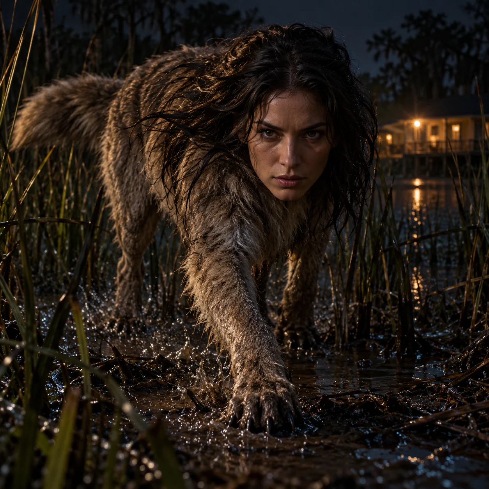
Woman-headed wolf stalks from the Mobile marsh.
Aura: No documented supernatural attack power; the recorded nocturnal stalking and marsh pursuit are physical actions. Only ordinary muddy spray from wolf paws; no glowing eyes or aura. [mobile-wolf-woman-c05, mobile-wolf-woman-c07]
Audit ciri dan sumber
- [object Object]
- [object Object]
- [object Object]
Native1254² and200px inspected: all7 Uji Sangar pass. Main manifestation dominates and retains threatening or awe-inspiring presence at200; active sourced moment, effects mapped, anatomy checked, no text/watermark/frame or recognizable franchise design, no ordinary/cute/calm portrait. Exactly one woman's head on a complete wolf body, four canine legs and wolf tail c02, no human torso/arms. Forepaw steps into wet marsh with muddy splash; silent intent gaze and close stalking position c05/c07 carry menace without adding violence or magic. No nudity, no costume/wig anatomy.
Review sumberONE original square premium painterly cinematic Mitoloka illustration of Mobile Wolf Woman, the woman-headed wolf reported in Alabama.
ANATOMY: ONE full WOLF BODY with a mature WOMAN'S HUMAN HEAD directly joined to the furred wolf neck. Exactly FOUR canine legs ending in wolf paws, one thick wolf tail; no human torso, breasts, arms, hands or human lower legs. Natural human face with two eyes, coarse long dark hair streaming back over coarse grey-brown wolf fur. [mobile-wolf-woman-c02]
MOMENT: Stalk out of the marsh directly toward the viewer, body low and one wolf forepaw reaching forward over the wet bank. The human face looks intensely and silently into the camera; hair blows back as the predator-shaped body advances. No victim is harmed.
POWER: No documented supernatural attack power; the recorded nocturnal stalking and marsh pursuit are physical actions. Only ordinary muddy spray from wolf paws; no glowing eyes or aura. [mobile-wolf-woman-c05, mobile-wolf-woman-c07]
SCALE & CAMERA / LIGHT & WEATHER: Extremely low close three-quarter camera, woman head and wolf torso dominate and all four canine leg roots remain readable; natural wolf size, no giant scale. One dim amber distant porch light catches wet fur, face half in black walnut shadow.
SURFACE: rough natural textures, dense tactile fur, feather, fire, hide, weathered cloth or stone as applicable; no plastic surfaces.
SETTING: A dark marsh near Mobile, Alabama, at night, with wet reeds and ordinary suburban house light barely visible behind the reeds. [mobile-wolf-woman-c01, mobile-wolf-woman-c05, mobile-wolf-woman-c07]
MOOD: dangerous, imposing or awe-inspiring, alive in a forceful moment; never ordinary, cute, placid, static or decorative.
HARD CONSTRAINTS: no text, lettering, signature, symbols, logo, border, frame or watermark anywhere; no extra heads, eyes, fingers or limbs; no film, game, anime or comic design; no nudity or explicit gore; no generic glowing aura, neon outline or energy ribbons.
Nežit
Menunggu gambar yang lolos audit
Olharapo
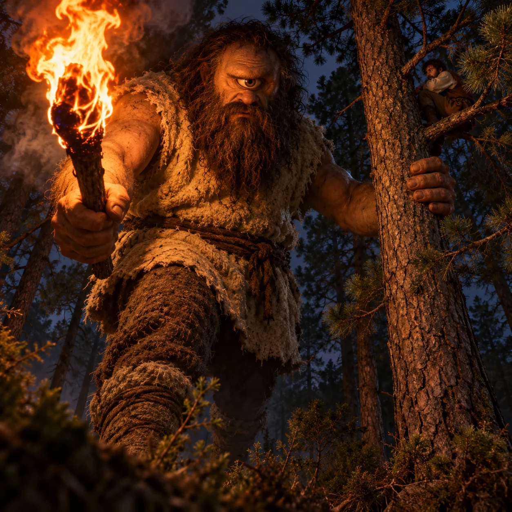
One-eyed Olharapo searches the pine wood with a torch.
Aura: The violent giant's documented torch search through the pine wood is physical action. The ordinary torch lights his single eye and rough face; he does not project flame or eye beams. [olharapo-c02, olharapo-c07]
Audit ciri dan sumber
- [object Object]
- [object Object]
- [object Object]
Native1254² and200px inspected: all7 Uji Sangar pass. Foreground being dominates, imposing at200px, active sourced moment, effects mapped, anatomy counted, no text/watermark/frame or recognizable franchise design, no ordinary/cute/calm reading. Exactly ONE great central forehead eye with no ordinary eye pair c01/c02; enormous rough-clothed giant searches pine wood with torch c07. Tiny unharmed adult hiding on adjacent branch gives directly connected size comparator. One head/two arms/two legs/natural hands, no flames projected by giant, ordinary torchfire only.
Review sumberONE original square premium painterly cinematic Mitoloka illustration of Olharapo, the single-forehead-eyed man-eating giant of Portuguese tales.
ANATOMY: ONE enormous humanlike giant, exactly ONE LARGE EYE in the MIDDLE OF THE FOREHEAD. Smooth continuous skin below it: no ordinary pair of eye sockets, no second or third eye. One head, two arms, two legs, two natural five-finger hands; coarse beard and rough fully opaque wool tunic and trousers. No horns, fangs or modern weapons. [olharapo-c01, olharapo-c02]
MOMENT: Stride into the pine wood searching with a burning wooden torch extended toward the viewer, free hand gripping a pine trunk. His enormous forehead eye narrows directly downward toward the hiding place; the pine is only chest high on him. A tiny adult man crouches high on one adjacent branch, hidden and completely unharmed.
POWER: The violent giant's documented torch search through the pine wood is physical action. The ordinary torch lights his single eye and rough face; he does not project flame or eye beams. [olharapo-c02, olharapo-c07]
SCALE & CAMERA / LIGHT & WEATHER: Camera at the pine roots looking upward, the giant fills the square with a clearly visible sole forehead eye. Adjacent trunk, adult man and torch establish giant scale. One strong orange torch source, swirling ordinary smoke, deep walnut forest shadows.
SURFACE: rough natural textures, dense tactile fur, feather, fire, hide, weathered cloth or stone as applicable; no plastic surfaces.
SETTING: The pine wood near the olharapos' house in the recorded Souto/Trás-os-Montes tale, no invented castle or ruins. [olharapo-c02, olharapo-c06, olharapo-c07]
MOOD: dangerous, imposing or awe-inspiring, alive in a forceful moment; never ordinary, cute, placid, static or decorative.
HARD CONSTRAINTS: no text, lettering, signature, symbols, logo, border, frame or watermark anywhere; no extra heads, eyes, fingers or limbs; no film, game, anime or comic design; no nudity or explicit gore; no generic glowing aura, neon outline or energy ribbons.
Opinicus
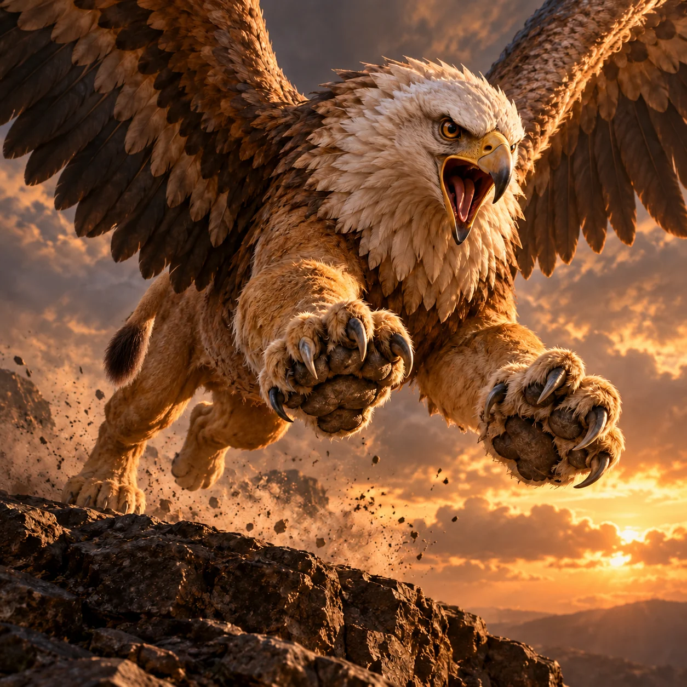
Opinicus with four lion paws and short camel tail leaps with eagle wings.
Aura: No supernatural attack power is recorded; the sourced eagle wings support the dynamic leap, which throws natural dust and feathers. No lightning, aura or invented magic. [opinicus-c02, opinicus-c03]
Audit ciri dan sumber
- [object Object]
- [object Object]
- [object Object]
Native1254² and200px inspected: all7 Uji Sangar pass. Foreground being dominates, imposing at200px, active sourced moment, effects mapped, anatomy counted, no text/watermark/frame or recognizable franchise design, no ordinary/cute/calm reading. Exactly eagle head and feathered neck, TWO eagle wings, one lion torso and FOUR lion legs/paws c01/c02/c03, including both forward paws with feline pads. Short downward camel tail visibly separate on the flank after edit02, matching c02/c03. Active leap and open beak, no ordinary heraldic decoration or statue; no powers invented.
Review sumberEdit ONLY the rear tail of this Opinicus creature. The current thin upward-curving long lion tail is wrong. Replace that entire tail with exactly ONE distinctly SHORT CAMEL TAIL: a short thick tawny downward-hanging tail, only about one quarter of its torso length, ending in a small coarse dark dangling brush of hair. It hangs down from the rump and is clearly visible against the sky on the left side; no long curve, no raised tail, no large round lion tuft. Keep the eagle head and feathered neck, two eagle wings, full lion body, EXACTLY FOUR feline legs and paws including both forepaws and feline pads/claws, charging leap, expression, lighting, cliff, dust, entire composition and all other details unchanged. No other anatomy changes. No text, signature, watermark, logo, border or frame, no gore, no magical effects. The short camel tail is the sourced key distinction c02/c03.
Ox Man of Wicklow
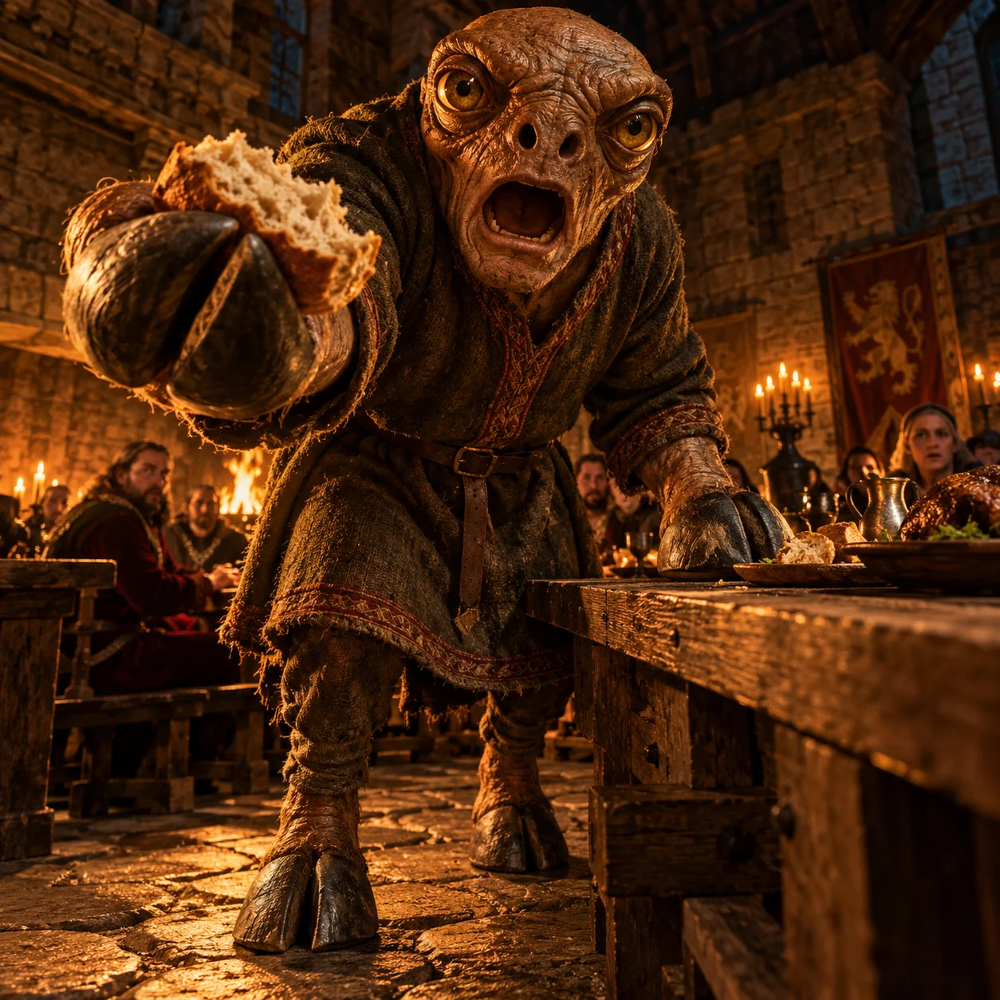
Bald huge-eyed flat-faced hoof-handed dinner visitor grasping food in a hoof cleft.
Aura: Threat or awe from sourced anatomy/action: ox-man-of-wicklow-c02, ox-man-of-wicklow-c03, ox-man-of-wicklow-c05, ox-man-of-wicklow-c06, ox-man-of-wicklow-c07, ox-man-of-wicklow-c04.
Audit ciri dan sumber
- [object Object]
- [object Object]
- [object Object]
Native1254x1254 and200px inspected; Uji Sangar7/7 yes. Third attempt replaces cute short figure with aged wrinkled adult bald flat head, two enormous eyes and two nostril holes c02/c03; all FOUR CLOVEN HOOF extremities visible, no fingers/horns/muzzle/tail. Food held at raised hoof cleft c07, solemn bellow c06 in castle dinner. Uncanny full-height confrontation and rough face read at200px, innocent being not made attacker. No text, frame, franchise imitation or gore.
Review sumberONE original square premium painterly cinematic Mitoloka illustration of Ox Man of Wicklow.
ANATOMY: One human-bodied being with a large BALD flat oxlike head, two enormous eyes, no protruding nose, just TWO nostril holes. Human arms and legs end in exactly FOUR LARGE CLOVEN HOOFS: two hoof-hands and two hoof-feet. No fingers, horns, bovine muzzle, tail or fur body. Fully opaque medieval wool tunic. [ox-man-of-wicklow-c02, ox-man-of-wicklow-c03, ox-man-of-wicklow-c05]
MOMENT: Lean forward across the court dinner table and raise a thick bread piece pinched BETWEEN THE TWO CLEFTS OF ONE ENORMOUS CLOVEN HOOF-HAND close to the viewer, other hoof-hand planted visibly beside plate. Open mouth in an uncanny oxlike bellow. Wide huge eyes look directly at viewer. Kind harmless being, unsettling difference rather than invented aggression. [ox-man-of-wicklow-c06, ox-man-of-wicklow-c07]
POWER: use only documented physical action or power specified above; when none specified, no supernatural effect.
SCALE & CAMERA: low angle, close and confrontational; creature unmistakable primary subject filling most of square; all distinguishing anatomy visible at200px. Respect documented size, do not invent giant size.
LIGHT & WEATHER: one strong raking low amber light, deep walnut shadows, high contrast silhouette.
SURFACE: tactile painterly realism, rough weathered materials, tangible hair, skin, feathers or scales appropriate to specified anatomy; no plastic.
SETTING: Maurice FitzGerald court dinner in Black Castle Wicklow, dim stone hall and rough wooden table, distant diners small and indistinct. [ox-man-of-wicklow-c04, ox-man-of-wicklow-c07]
MOOD: dangerous, uncanny or awe-inspiring as appropriate to documented disposition, never ordinary person or wildlife, calm cute mascot or decorative portrait. Protectors remain protective.
HARD CONSTRAINTS: one square image at least1024x1024. No text, lettering, signature, glyphs, logo, border, frame or watermark; no extra heads, limbs, digits or eyes beyond specified anatomy; no film/game/anime/comic designs. No nudity, exposed genitals, injury, blood or explicit gore. Human figures fully covered in opaque clothing. No generic aura, neon outline, glowing eyes, energy ribbons or invented powers. Clothing and bread form editorial. No supernatural power or malicious attack is documented or depicted. Head stays flat-faced, not a minotaur; four hoof extremities countable.
TARGETED REPAIR: Keep the documented bald flat oxlike face with two enormous eyes and nose-holes, human body, and four cloven hoof extremities. Make face ADULT, aged, heavy wrinkled brow and grave unblinking gaze, no baby proportions, no smile, no cute mascot or friendly alien expression. Show a deeply uncanny solemn bellow, strong shadow across eye sockets; do not turn the innocent being evil or attacking. Widen composition slightly so both cloven hoof FEET below dinner bench remain readable in lower frame, plus both hoof HANDS pinching bread. Low camera, rough adult skin, hard shadow. Keep modest opaque tunic and castle dinner setting.
TARGETED REPAIR: Generate a genuinely different ADULT HUMAN HEIGHT composition with NO cute childlike alien traits. A tall weathered human-bodied man-monster with flat broad BALD OXLIKE HEAD, deep irregular wrinkles and heavily folded skin around two huge SIDESET adult bovine eyes. The eyes are anatomically huge but not round sparkling baby eyes: harsh glare, small dark pupils, prominent rough lower lids, severely shadowed sockets. A heavy broad square jaw opening to bellow; only two nostril holes flush with face, no protruding muzzle, no horns. A stark dramatic upshot as he stands at full human height beside the castle dinner table. One cloven hoof-hand thrusts bread held IN ITS CLEFT directly at lens, other hoof hand clear, BOTH cloven hoof feet below ragged fully opaque medieval tunic visible. Witnesses remain normal-sized humans. Monster is innocent but intensely uncanny; no smiling, pleading, gentle baby expression, miniature stature or mascot. Hard raking firelight carves face into deep shadows, not flat warm friendly lighting.
Peeira
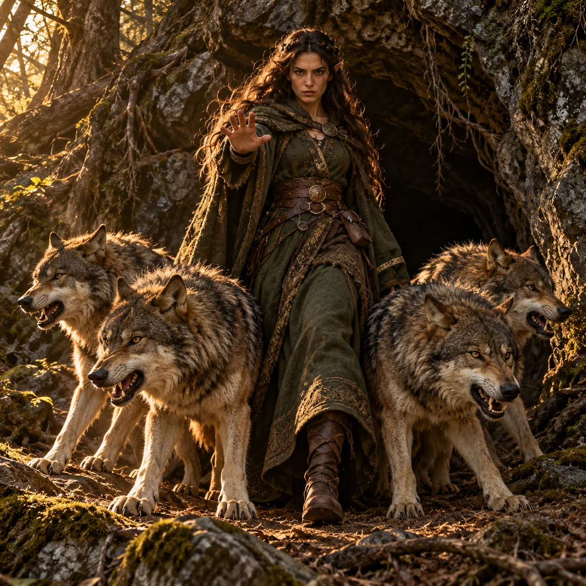
Wolf guardian halting her fierce pack with one command at den mouth.
Aura: Threat or awe from sourced anatomy/action: peeira-mythological-creature-c01, peeira-mythological-creature-c02, peeira-mythological-creature-c03, peeira-mythological-creature-c05.
Audit ciri dan sumber
- [object Object]
- [object Object]
- [object Object]
Native1254x1254 and200px inspected; Uji Sangar7/7 yes. One fully clothed adult guardian commands four snarling wolves at den entrance; synchronized outward-facing halt and foreground open hand show c02 control. No added fairy wings, wolf-human hybrid anatomy, giant scale or magical glow. Protective stern presence reads at200px. No text, border, franchise design or explicit gore.
Review sumberONE original square premium painterly cinematic Mitoloka illustration of Peeira.
ANATOMY: One young ADULT woman, human anatomy one head/two eyes/two arms/two legs, fully opaque coarse long forest cloak and dress, no wings, pointed ears, wolf anatomy, crown or glowing eyes. A tightly clustered PACK OF FOUR wolves surrounds her at her feet. [peeira-mythological-creature-c01]
MOMENT: Stride toward viewer from the wolf den and raise one commanding open hand; the four snarling wolves pivot and halt in unison at her command, their mouths and tense shoulders facing outward while she faces viewer with stern protective authority. Command of living wolves is visible through their synchronized response, without magical light. She protects wolves and forest rather than attacking an invented victim. [peeira-mythological-creature-c02, peeira-mythological-creature-c03]
POWER: use only documented physical action or power specified above; when none specified, no supernatural effect.
SCALE & CAMERA: low angle, close and confrontational; creature unmistakable primary subject filling most of square; all distinguishing anatomy visible at200px. Respect documented size, do not invent giant size.
LIGHT & WEATHER: one strong raking low amber light, deep walnut shadows, high contrast silhouette.
SURFACE: tactile painterly realism, rough weathered materials, tangible hair, skin, feathers or scales appropriate to specified anatomy; no plastic.
SETTING: Portuguese/Galician mountain forest, wolf den entrance immediately behind, dark rocks and tangled roots. [peeira-mythological-creature-c03, peeira-mythological-creature-c05]
MOOD: dangerous, uncanny or awe-inspiring as appropriate to documented disposition, never ordinary person or wildlife, calm cute mascot or decorative portrait. Protectors remain protective.
HARD CONSTRAINTS: one square image at least1024x1024. No text, lettering, signature, glyphs, logo, border, frame or watermark; no extra heads, limbs, digits or eyes beyond specified anatomy; no film/game/anime/comic designs. No nudity, exposed genitals, injury, blood or explicit gore. Human figures fully covered in opaque clothing. No generic aura, neon outline, glowing eyes, energy ribbons or invented powers. Exact garments, number four wolves and hand gesture editorial. Human scale; no giant inflation. Control shown by wolf movement only.
Praděd
Menunggu gambar yang lolos audit
Rávgá
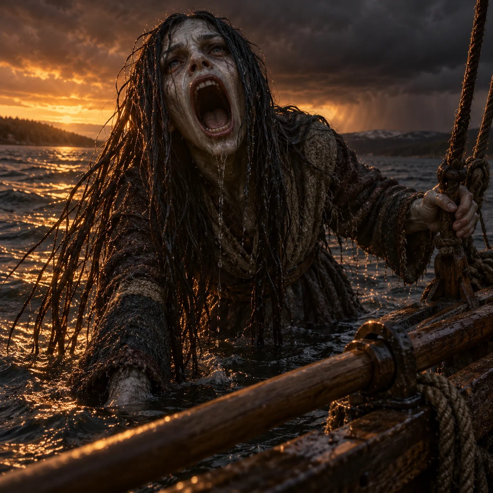
Long-haired large-mouthed drowned ghost shouting beside boat whose fittings it examines.
Aura: Threat or awe from sourced anatomy/action: ravga-c01, ravga-c06, ravga-c03, ravga-c07, ravga-c10.
Audit ciri dan sumber
- [object Object]
- [object Object]
- [object Object]
Native1254x1254 and200px inspected; Uji Sangar7/7 yes. Long wet hair, disproportionately large shouting mouth, humanlike drowned spirit examining boat rigging c01/c03/c07; two arms/hands, no extra anatomy or wounds. Tempest horizon is omen c06, not caused weather. Uncanny cry clear at200px. No text, border, franchise design or explicit gore.
Review sumberONE original square premium painterly cinematic Mitoloka illustration of Rávgá.
ANATOMY: One humanlike drowned spirit with extraordinarily LONG drenched HAIR and a disproportionately LARGE OPEN MOUTH, one head/two eyes/two arms/two legs, opaque soaked northern wool garments, no horns, claws or corpse wounds. [ravga-c01, ravga-c06]
MOMENT: Rise close beside a boat and SHOUT toward the viewer, one hand examining the boat rigging and oarlock; long wet hair streams down around huge open mouth. The drowned ghost harasses by uncanny shouting and foretells misfortune, it does not attack or command weather. [ravga-c03, ravga-c06, ravga-c07]
POWER: use only documented physical action or power specified above; when none specified, no supernatural effect.
SCALE & CAMERA: low angle, close and confrontational; creature unmistakable primary subject filling most of square; all distinguishing anatomy visible at200px. Respect documented size, do not invent giant size.
LIGHT & WEATHER: one strong raking low amber light, deep walnut shadows, high contrast silhouette.
SURFACE: tactile painterly realism, rough weathered materials, tangible hair, skin, feathers or scales appropriate to specified anatomy; no plastic.
SETTING: Scandinavian Lapland water shore beside a small boat, cold dim dusk, dark tempest on distant horizon as an omen only, not magically caused. [ravga-c06, ravga-c07, ravga-c10]
MOOD: dangerous, uncanny or awe-inspiring as appropriate to documented disposition, never ordinary person or wildlife, calm cute mascot or decorative portrait. Protectors remain protective.
HARD CONSTRAINTS: one square image at least1024x1024. No text, lettering, signature, glyphs, logo, border, frame or watermark; no extra heads, limbs, digits or eyes beyond specified anatomy; no film/game/anime/comic designs. No nudity, exposed genitals, injury, blood or explicit gore. Human figures fully covered in opaque clothing. No generic aura, neon outline, glowing eyes, energy ribbons or invented powers. No drowned victim or graphic corpse. Not evil monster; uncanny powerful encounter via mouth, hair and foreground scale, human size. Ambient storm is foretold, never generated.
Salamanca do Jarau
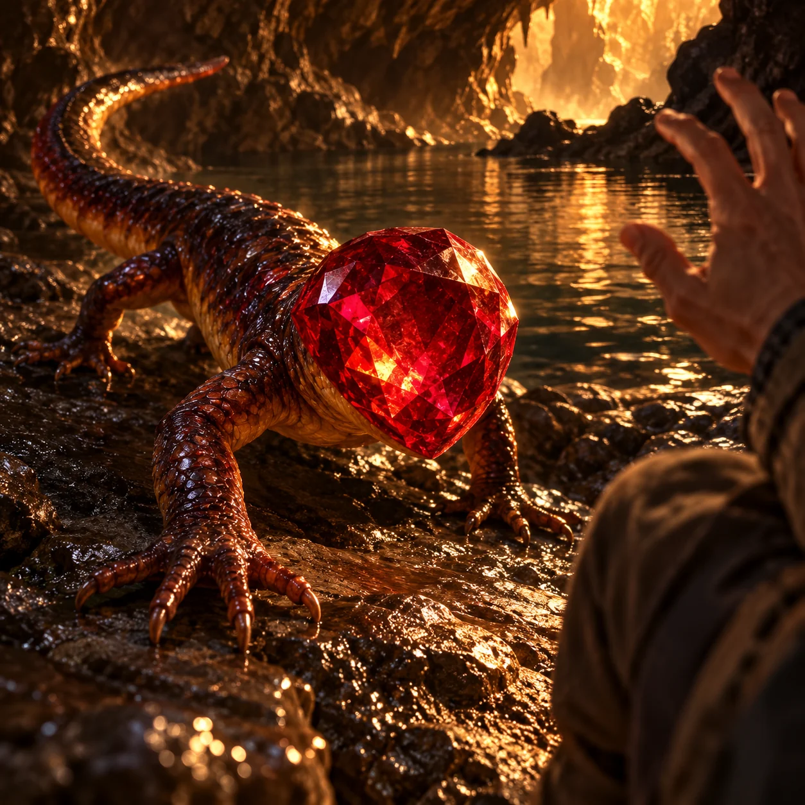
Ruby-headed lizard dazzling a pursuer from wet Jarau cave rock.
Aura: Threat or awe from sourced anatomy/action: salamanca-do-jarau-c02, salamanca-do-jarau-c03, salamanca-do-jarau-c04, salamanca-do-jarau-c05, salamanca-do-jarau-c01.
Audit ciri dan sumber
- [object Object]
- [object Object]
- [object Object]
Native1254x1254 and200px inspected; Uji Sangar7/7 yes. One lizard with entire ruby gemstone head c03, four legs with far rear partly occluded, one tapering tail. Brilliant ruby light and recoiling pursuer hand c05; cave lagoon c01/c03. Gem-headed supernatural form and confrontation read at200px; no second reptile head or eyes, no generic aura. No text, border, franchise design or explicit gore.
Review sumberONE original square premium painterly cinematic Mitoloka illustration of Salamanca do Jarau.
ANATOMY: Exactly ONE small four-legged lizard/salamander body with long tapering tail, its ENTIRE HEAD a sparkling faceted RUBY-RED GEM, no ordinary lizard head or eyes behind the gemstone, no wings or horns. [salamanca-do-jarau-c02, salamanca-do-jarau-c03]
MOMENT: Clamber directly toward viewer over wet cave rock, gemstone head dazzling the eye; at frame edge a would-be pursuer hand recoils and turns away from the ruby radiance. The lure and dazzling head make this a supernatural creature rather than an ordinary reptile. [salamanca-do-jarau-c03, salamanca-do-jarau-c04, salamanca-do-jarau-c05]
POWER: use only documented physical action or power specified above; when none specified, no supernatural effect.
SCALE & CAMERA: low angle, close and confrontational; creature unmistakable primary subject filling most of square; all distinguishing anatomy visible at200px. Respect documented size, do not invent giant size.
LIGHT & WEATHER: one strong raking low amber light, deep walnut shadows, high contrast silhouette.
SURFACE: tactile painterly realism, rough weathered materials, tangible hair, skin, feathers or scales appropriate to specified anatomy; no plastic.
SETTING: Rocky cave beside the lagoon on Cerro do Jarau, close ground perspective and dark reflective water. [salamanca-do-jarau-c01, salamanca-do-jarau-c03]
MOOD: dangerous, uncanny or awe-inspiring as appropriate to documented disposition, never ordinary person or wildlife, calm cute mascot or decorative portrait. Protectors remain protective.
HARD CONSTRAINTS: one square image at least1024x1024. No text, lettering, signature, glyphs, logo, border, frame or watermark; no extra heads, limbs, digits or eyes beyond specified anatomy; no film/game/anime/comic designs. No nudity, exposed genitals, injury, blood or explicit gore. Human figures fully covered in opaque clothing. No generic aura, neon outline, glowing eyes, energy ribbons or invented powers. Choose gem-for-head variant c03, not combine with stone-set-in-flesh interpretation c04. Ruby radiance follows c03/c05, no generic aura elsewhere. Creature remains small, extreme macro view creates dominance.
Serre
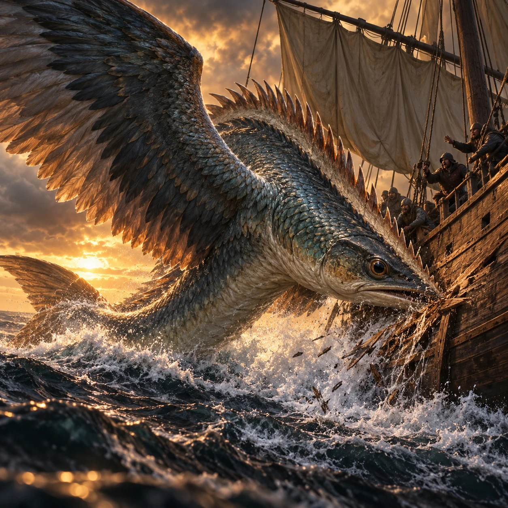
Saw-crested winged fish wrecking hull as raised wings cut off the sailing wind.
Aura: Threat or awe from sourced anatomy/action: serre-c01, serre-c07, serre-c08.
Audit ciri dan sumber
- [object Object]
- [object Object]
- [object Object]
Native1254x1254 and200px inspected; Uji Sangar7/7 yes. Fish-bodied winged creature with huge wings, fish tail, no legs; serrated dorsal/nasal crest cuts ship wood c08, wings obstruct sail wind while hull splinters. Threat fills200px; no blood, glowing power, text or watermark. No text, border, franchise design or explicit gore.
Review sumberONE original square premium painterly cinematic Mitoloka illustration of Serre.
ANATOMY: One enormous winged FISH creature, one fish head/two natural eyes, fish scales, one fish tail, exactly TWO ENORMOUS WINGS, no legs, no human torso. A conspicuous SERRATED SAW CREST runs atop the head and back. [serre-c01, serre-c07, serre-c08]
MOMENT: Surge immediately beside a medieval sailing ship and rake its hull with the serrated crest; two vast raised wings form a wall across the wind. Show canvas sail behind its wings dropping slack while sea spray erupts along the cut hull; intact tiny sailors recoil, no injury. [serre-c01, serre-c08]
POWER: use only documented physical action or power specified above; when none specified, no supernatural effect.
SCALE & CAMERA: low angle, close and confrontational; creature unmistakable primary subject filling most of square; all distinguishing anatomy visible at200px. Respect documented size, do not invent giant size.
LIGHT & WEATHER: one strong raking low amber light, deep walnut shadows, high contrast silhouette.
SURFACE: tactile painterly realism, rough weathered materials, tangible hair, skin, feathers or scales appropriate to specified anatomy; no plastic.
SETTING: Open sea directly alongside the threatened sailing ship, violent dark water and failing sail. [serre-c07, serre-c08]
MOOD: dangerous, uncanny or awe-inspiring as appropriate to documented disposition, never ordinary person or wildlife, calm cute mascot or decorative portrait. Protectors remain protective.
HARD CONSTRAINTS: one square image at least1024x1024. No text, lettering, signature, glyphs, logo, border, frame or watermark; no extra heads, limbs, digits or eyes beyond specified anatomy; no film/game/anime/comic designs. No nudity, exposed genitals, injury, blood or explicit gore. Human figures fully covered in opaque clothing. No generic aura, neon outline, glowing eyes, energy ribbons or invented powers. Two wing material and fish proportions editorial; no added horns, limbs, fire or lightning. Saw crest cuts wood, no gore. Wind obstruction depicted by drooping sail and wings rather than energy.
Todorci
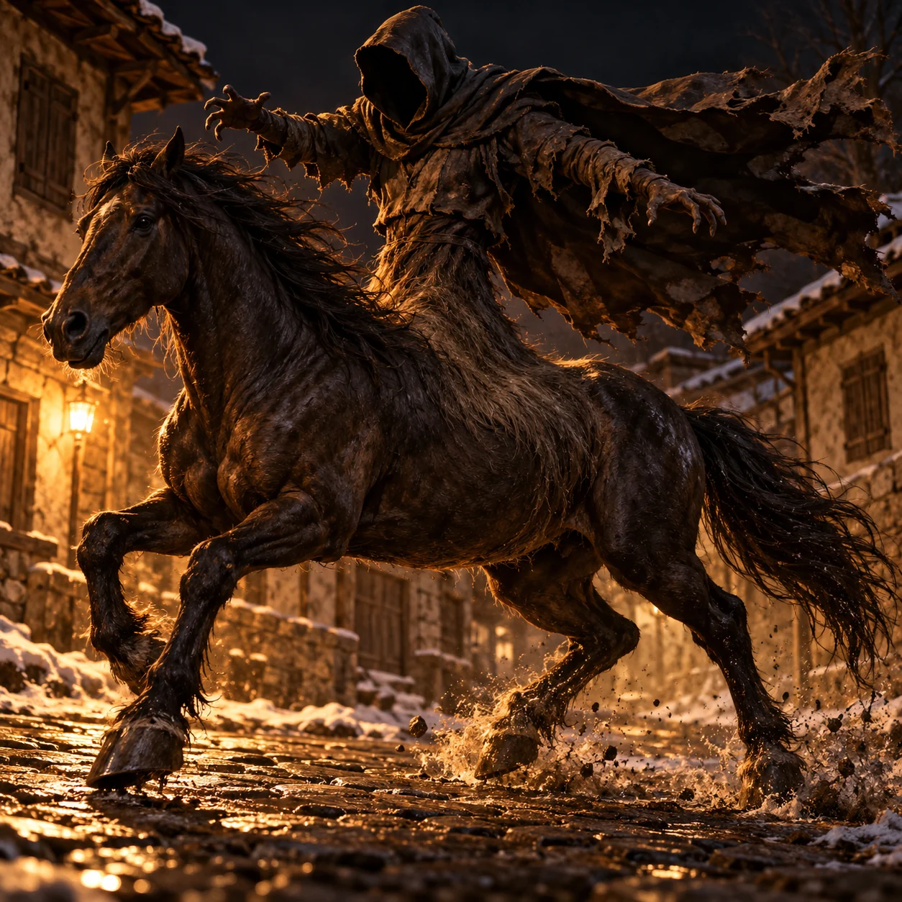
Faceless cloaked horse-human fusion thundering along dark village road.
Aura: Threat or awe from sourced anatomy/action: todorci-c01, todorci-c02, todorci-c03, todorci-c04.
Audit ciri dan sumber
- [object Object]
- [object Object]
- [object Object]
Native1254x1254 and200px inspected; Uji Sangar7/7 yes. Third attempt shows horse head and FOUR hoof legs plus TWO humanoid arms; human upper torso rises on a visibly horse-furred waist directly from horse mid-back c01/c02, no separate rider pelvis/legs, saddle, tack or reins. Faceless black hood and backward-whipping cloak c02; galloping night village hooves throw physical road dirt c03/c04. Fusion readable at200px, no ordinary mounted rider. No glowing eyes, magic, victim, blood, text, frame or franchise imitation.
Review sumberONE original square premium painterly cinematic Mitoloka illustration of Todorci.
ANATOMY: One principal half-human half-HORSE demon: human torso grows FUSED from the horse back, no separate seat or saddle and no detachable rider. Horse has one equine head and four hoofed legs; humanoid torso two arms, head and face COMPLETELY HIDDEN in a deep opaque fluttering hooded cloak, no visible face or eyes. [todorci-c01, todorci-c02]
MOMENT: Thunder headlong down the village road directly toward viewer, four hooves striking cobblestones, great cloak whipping backward and fusion of human torso to horse back clearly exposed from side-three-quarter angle. Break loose road dirt and straw under hooves; no victim or injury. [todorci-c02, todorci-c03, todorci-c04]
POWER: use only documented physical action or power specified above; when none specified, no supernatural effect.
SCALE & CAMERA: low angle, close and confrontational; creature unmistakable primary subject filling most of square; all distinguishing anatomy visible at200px. Respect documented size, do not invent giant size.
LIGHT & WEATHER: one strong raking low amber light, deep walnut shadows, high contrast silhouette.
SURFACE: tactile painterly realism, rough weathered materials, tangible hair, skin, feathers or scales appropriate to specified anatomy; no plastic.
SETTING: Balkan settlement road at NIGHT near winter end, closed shuttered homes behind, thin patches of melting snow. [todorci-c03, todorci-c04]
MOOD: dangerous, uncanny or awe-inspiring as appropriate to documented disposition, never ordinary person or wildlife, calm cute mascot or decorative portrait. Protectors remain protective.
HARD CONSTRAINTS: one square image at least1024x1024. No text, lettering, signature, glyphs, logo, border, frame or watermark; no extra heads, limbs, digits or eyes beyond specified anatomy; no film/game/anime/comic designs. No nudity, exposed genitals, injury, blood or explicit gore. Human figures fully covered in opaque clothing. No generic aura, neon outline, glowing eyes, energy ribbons or invented powers. Generic todorci, not Veliki Todor: no white sheet, chain or invented lameness. No glowing eyes in hood; hide face completely. Horse-human hybrid body not a normal mounted man.
TARGETED REPAIR: Use three-quarter SIDE view to show a SINGLE fused horse-human body, not a person seated on horseback. Retain the HORSE HEAD and exactly FOUR HORSE LEGS. At MID-BACK behind horse neck a human UPPER TORSO GROWS DIRECTLY OUT OF HORSE SPINE. Show a broad seamless organic fur-and-cloth junction instead of rider pelvis or thighs. Human torso extends upward, two arms spread menacingly, cloak lifted backward by galloping wind. There are NO HUMAN LEGS, NO SADDLE, NO REINS, NO BRIDLE, NO STRAPS OR HORSE TACK, NO STIRRUPS. The hood completely conceals face and eyes. Gallop side-on diagonally toward viewer through dark winter-end village; most frame is the one fused body. Source describes body growing from horseback, make this impossible anatomy unambiguous. Do not turn into ordinary centaur whose human torso replaces horse head: KEEP HORSE HEAD TOO.
TARGETED REPAIR: FINAL COMPOSITION: strict broad SIDE PROFILE of a biologically fused monster. A dark horse has its usual head neck body tail and FOUR equine legs. At the middle of its back, behind the neck, a tall furry column RISES DIRECTLY FROM THE HORSE SPINE and becomes a human upper torso with TWO arms and a faceless hooded head. The torso is NOT sitting: its vertical waist is a narrow horse-furred stalk completely JOINED into the horse back. Show the full waist-to-horseback junction unobscured, side lit. The tattered cloak is swept behind the torso and cannot cover the fusion joint; a short opaque ragged tunic covers chest only, below it the waist is horse fur continuous with horse body. No bare human skin below tunic. No human pelvis, human thighs, human legs, rider seat, saddle, reins, bridle or harness. Arms thrust outward. Head inside black hood entirely invisible. Show exactly this impossible fused six-limbed silhouette in a full-body side gallop, close dominant in dark snowy Balkan village, not an ordinary horseman. Low angle BUT SIDE VIEW, NOT frontal view.
Triton (fabeldier)
Menunggu gambar yang lolos audit
Vyal
Menunggu gambar yang lolos audit
欽原
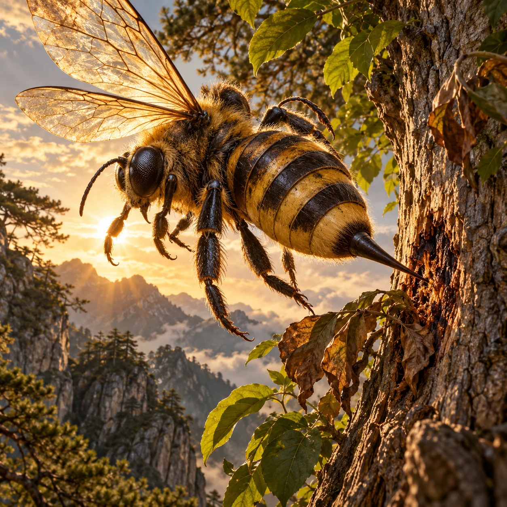
Duck-sized bee-shaped Qinyuan withering a tree with its sting.
Aura: Threat or awe from sourced anatomy/action: wd-q10366170-c01, wd-q10366170-c02, wd-q10366170-c08, wd-q10366170-c04, wd-q10366170-c07, wd-q10366170-c05.
Audit ciri dan sumber
- [object Object]
- [object Object]
- [object Object]
Native1254x1254 and200px inspected; Uji Sangar7/7 yes. Bee-shaped duck-sized being, six insect legs with far legs partly obscured, two wing pairs with far pair overlapping; terminal sting pierces tree bark, brown shrivelled leaves and hollowed bark around contact c04/c07 versus green leaves further away. Close sharp sting and damaged tree create threat at200px; no bird beak, invented human face or magic rays. No text, frame, franchise imitation or gore.
Review sumberONE original square premium painterly cinematic Mitoloka illustration of 欽原.
ANATOMY: One Qinyuan, a bird described as shaped LIKE A BEE, the SIZE OF A MANDARIN DUCK. Depict a large bee-shaped flying being, six insect legs, two pairs of translucent bee wings, segmented abdomen and sharp terminal STINGER, one head/two compound eyes; no human face or bird beak added. [wd-q10366170-c01, wd-q10366170-c02, wd-q10366170-c08]
MOMENT: Hover aggressively close and drive the abdomen stinger into a living tree trunk; leaves nearest the contact visibly shrivel and turn brown while nearby untouched leaves remain green, bark splits and hollows immediately under the venomous sting. No victims. [wd-q10366170-c04, wd-q10366170-c07, wd-q10366170-c08]
POWER: use only documented physical action or power specified above; when none specified, no supernatural effect.
SCALE & CAMERA: low angle, close and confrontational; creature unmistakable primary subject filling most of square; all distinguishing anatomy visible at200px. Respect documented size, do not invent giant size.
LIGHT & WEATHER: one strong raking low amber light, deep walnut shadows, high contrast silhouette.
SURFACE: tactile painterly realism, rough weathered materials, tangible hair, skin, feathers or scales appropriate to specified anatomy; no plastic.
SETTING: Mountain forest on Kunlun, tight view beside the struck tree, branch and leaves give duck-size comparison. [wd-q10366170-c05]
MOOD: dangerous, uncanny or awe-inspiring as appropriate to documented disposition, never ordinary person or wildlife, calm cute mascot or decorative portrait. Protectors remain protective.
HARD CONSTRAINTS: one square image at least1024x1024. No text, lettering, signature, glyphs, logo, border, frame or watermark; no extra heads, limbs, digits or eyes beyond specified anatomy; no film/game/anime/comic designs. No nudity, exposed genitals, injury, blood or explicit gore. Human figures fully covered in opaque clothing. No generic aura, neon outline, glowing eyes, energy ribbons or invented powers. Normal bee anatomy visualizes the documented bee-like form; duck-size and tree-withering sting distinguish this being from an ordinary bee. No lightning, fire or energy rays.
馬絆蛇
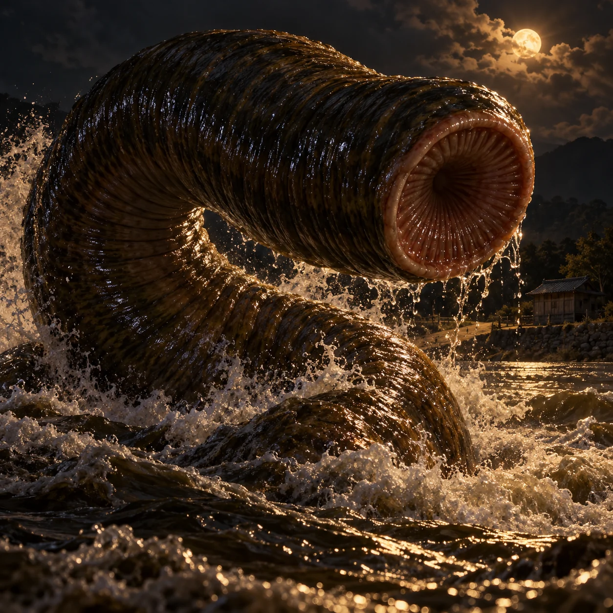
House-sized slimy leech-form Maban rolling from the river at night.
Aura: Threat or awe from sourced anatomy/action: wd-q10566523-c02, wd-q10566523-c07, wd-q10566523-c10, wd-q10566523-c09.
Audit ciri dan sumber
- [object Object]
- [object Object]
- [object Object]
Native1254x1254 and200px inspected; Uji Sangar7/7 yes. House-sized annulated slimy leech-shaped Maban c07/c10 rolling from night river, blunt sucker and no eyes/legs/horns/cat head or serpent crest. Tiny far-bank house compares sourced scale; turbulent waves physical motion. Threat dominates200px without blood feeding. No text, frame, borrowed franchise design or explicit gore.
Review sumberONE original square premium painterly cinematic Mitoloka illustration of 馬絆蛇.
ANATOMY: One massive house-sized LEECH-SHAPED water creature, smooth slimy annulated cylindrical body, blunt sucker mouth, no arms, legs, fins, horns, whiskers, dragon crest, cat head or added eyes. [wd-q10566523-c02, wd-q10566523-c07, wd-q10566523-c10]
MOMENT: Roll and heave upward out of river depths immediately in front of viewer, body curling into a heavy loop as foul dark waves crash around it. A tiny closed post-station building on far bank compares its small-house size, no victim or blood. [wd-q10566523-c10]
POWER: use only documented physical action or power specified above; when none specified, no supernatural effect.
SCALE & CAMERA: low angle, close and confrontational; creature unmistakable primary subject filling most of square; all distinguishing anatomy visible at200px. Respect documented size, do not invent giant size.
LIGHT & WEATHER: one strong raking low amber light, deep walnut shadows, high contrast silhouette.
SURFACE: tactile painterly realism, rough weathered materials, tangible hair, skin, feathers or scales appropriate to specified anatomy; no plastic.
SETTING: Night river of the Maban account, faint moonlight, sandy bank and rolling river water near a post station. [wd-q10566523-c09, wd-q10566523-c10]
MOOD: dangerous, uncanny or awe-inspiring as appropriate to documented disposition, never ordinary person or wildlife, calm cute mascot or decorative portrait. Protectors remain protective.
HARD CONSTRAINTS: one square image at least1024x1024. No text, lettering, signature, glyphs, logo, border, frame or watermark; no extra heads, limbs, digits or eyes beyond specified anatomy; no film/game/anime/comic designs. No nudity, exposed genitals, injury, blood or explicit gore. Human figures fully covered in opaque clothing. No generic aura, neon outline, glowing eyes, energy ribbons or invented powers. Choose leech-form variant, not cat/mouse-head version c05. Size follows river Maban c10; no added serpentine dragon body. Annulation and sucker are editorial visualization of leech form. Fishy wind represented by stirred spray, not green fumes.
龍伯
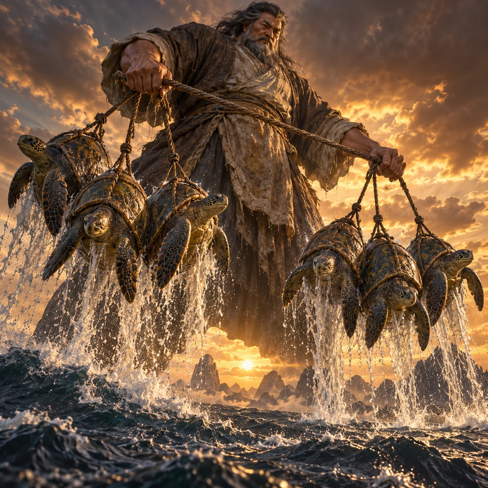
Longbo giant hauling six distinct giant turtles in one cast.
Aura: Threat or awe from sourced anatomy/action: wd-q10567375-c01, wd-q10567375-c06, wd-q10567375-c07, wd-q10567375-c03, wd-q10567375-c08, wd-q10567375-c02, wd-q10567375-c04.
Audit ciri dan sumber
- [object Object]
- [object Object]
- [object Object]
Native1254x1254 and200px inspected; Uji Sangar7/7 yes. One clothed giant with both human hands hauling SIX distinct turtle catches: three left and three right, all six shells/heads countable. Mountain islands tiny under giant and falling seawater emphasize documented giant scale c02/c03/c06/c07/c08; no injury, blood, bones or magic. Awe at200px. No text, border, borrowed franchise design or gore.
Review sumberONE original square premium painterly cinematic Mitoloka illustration of 龍伯.
ANATOMY: Exactly ONE colossal HUMAN GIANT from Longbo, one head/two eyes/two arms/two legs, opaque weathered ancient robe covering torso and hips, no horns, crown, armor or other divine attributes. Exactly SIX distinct GIANT TURTLES caught together, each with one clear shell and turtle head, arranged as two staggered vertical groups of THREE so all SIX can be counted. [wd-q10567375-c01, wd-q10567375-c06, wd-q10567375-c07]
MOMENT: Brace across the sea and haul one enormous fishing line from the water with both hands; the single line branches to SIX turtle catches suspended side by side, shells heavy and dripping. The giant towers over distant mountain islands; water falls in huge physical sheets from six shells. Turtles alive, no injuries, blood, bones or divination gore. [wd-q10567375-c03, wd-q10567375-c08]
POWER: use only documented physical action or power specified above; when none specified, no supernatural effect.
SCALE & CAMERA: low angle, close and confrontational; creature unmistakable primary subject filling most of square; all distinguishing anatomy visible at200px. Respect documented size, do not invent giant size.
LIGHT & WEATHER: one strong raking low amber light, deep walnut shadows, high contrast silhouette.
SURFACE: tactile painterly realism, rough weathered materials, tangible hair, skin, feathers or scales appropriate to specified anatomy; no plastic.
SETTING: Mythic sea around the five sacred mountains reached in a few giant steps; dark ocean, remote mountain islands very small under giant frame. [wd-q10567375-c02, wd-q10567375-c04]
MOOD: dangerous, uncanny or awe-inspiring as appropriate to documented disposition, never ordinary person or wildlife, calm cute mascot or decorative portrait. Protectors remain protective.
HARD CONSTRAINTS: one square image at least1024x1024. No text, lettering, signature, glyphs, logo, border, frame or watermark; no extra heads, limbs, digits or eyes beyond specified anatomy; no film/game/anime/comic designs. No nudity, exposed genitals, injury, blood or explicit gore. Human figures fully covered in opaque clothing. No generic aura, neon outline, glowing eyes, energy ribbons or invented powers. Exact human appearance, opaque robe and fishing-line configuration editorial. Scale monumental by giant claims; not ordinary fisherman. Exactly six catches with no extra turtles hidden in water.
傲因
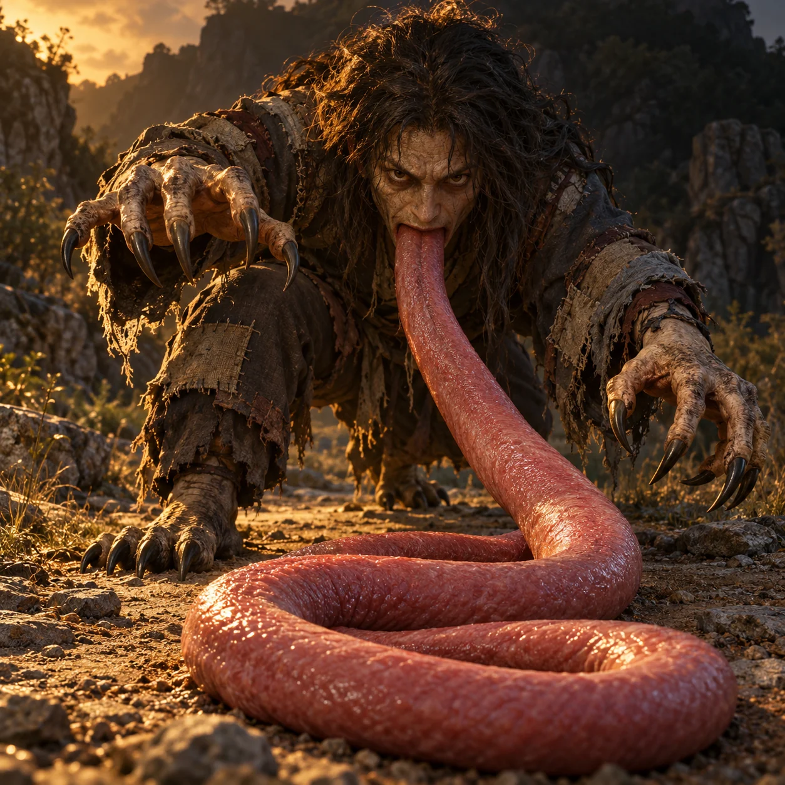
Rag-clad tiger-clawed Aoyin creeping over its long ground-coiling tongue.
Aura: Threat or awe from sourced anatomy/action: wd-q10889265-c01, wd-q10889265-c03, wd-q10889265-c06, wd-q10889265-c07, wd-q10889265-c08.
Audit ciri dan sumber
- [object Object]
- [object Object]
- [object Object]
Native1254x1254 and200px inspected; Uji Sangar7/7 yes. Human-height patched-clothed crouching monster, both hands and feet end in tigerlike claws c03/c08. One continuous long organic tongue from mouth coils on ground c07, no duplicated tongue, snake head or tentacles. Menacing direct gaze and enormous tongue readable at200px, no brains/blood/victim or magical effect. No text, frame, borrowed franchise design or explicit gore.
Review sumberONE original square premium painterly cinematic Mitoloka illustration of 傲因.
ANATOMY: One HUMAN-HEIGHT human-shaped monster in fully opaque RAGGED PATCHED clothes; both HANDS AND FEET are TIGER CLAWS rather than human extremities, one head/two eyes/two arms/two legs. One extraordinary TONGUE stretches out of mouth and coils on ground for more than a zhang, a single fleshy intact tongue with continuous path, NOT a snake or tentacle. [wd-q10889265-c01, wd-q10889265-c03, wd-q10889265-c06, wd-q10889265-c07, wd-q10889265-c08]
MOMENT: Creep forward in a crouch toward the viewer, tiger-claw hands raised over the huge foreground tongue coiled twice on soil, mouth stretched around its root, direct predatory eyes. No brains, victims, killing or blood. [wd-q10889265-c06, wd-q10889265-c07]
POWER: use only documented physical action or power specified above; when none specified, no supernatural effect.
SCALE & CAMERA: low angle, close and confrontational; creature unmistakable primary subject filling most of square; all distinguishing anatomy visible at200px. Respect documented size, do not invent giant size.
LIGHT & WEATHER: one strong raking low amber light, deep walnut shadows, high contrast silhouette.
SURFACE: tactile painterly realism, rough weathered materials, tangible hair, skin, feathers or scales appropriate to specified anatomy; no plastic.
SETTING: Rocky path in the Western Wilds, solitary dark wilderness immediately behind, low light catching tongue and claws. [wd-q10889265-c06]
MOOD: dangerous, uncanny or awe-inspiring as appropriate to documented disposition, never ordinary person or wildlife, calm cute mascot or decorative portrait. Protectors remain protective.
HARD CONSTRAINTS: one square image at least1024x1024. No text, lettering, signature, glyphs, logo, border, frame or watermark; no extra heads, limbs, digits or eyes beyond specified anatomy; no film/game/anime/comic designs. No nudity, exposed genitals, injury, blood or explicit gore. Human figures fully covered in opaque clothing. No generic aura, neon outline, glowing eyes, energy ribbons or invented powers. Human height, extreme close foreshortening only. Patched clothes remain opaque. No heated stone death scene or brain imagery. Tongue is plain organic tongue, not magical serpent.
山𤟤
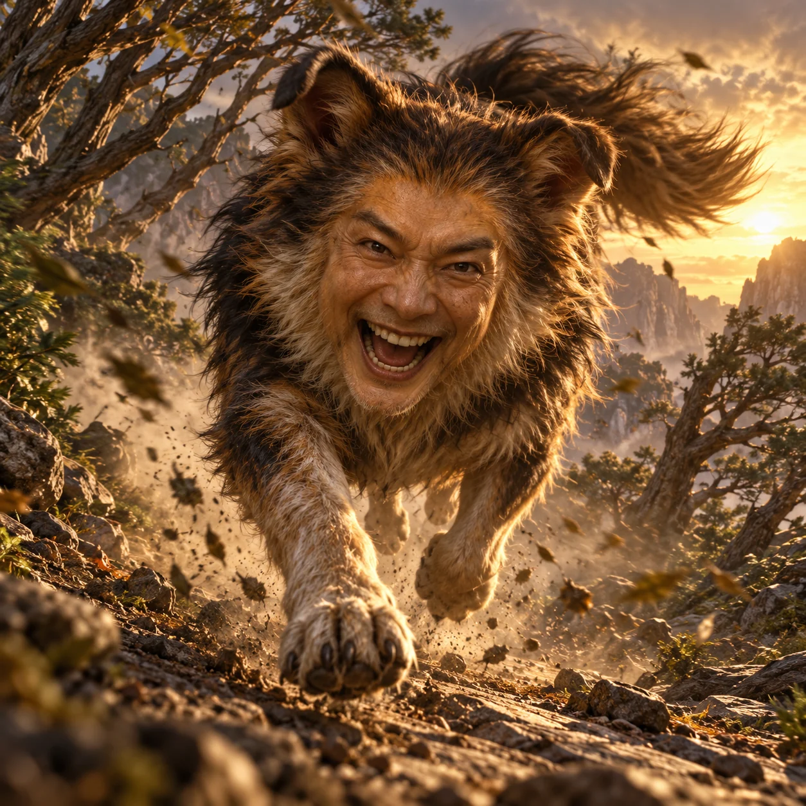
Human-faced laughing dog rushing with a gale on Mount Yuefa.
Aura: Threat or awe from sourced anatomy/action: wd-q11047879-c01, wd-q11047879-c02, wd-q11047879-c05, wd-q11047879-c07, wd-q11047879-c03, wd-q11047879-c09.
Audit ciri dan sumber
- [object Object]
- [object Object]
- [object Object]
Native1254x1254 and200px inspected; Uji Sangar7/7 yes. Dog body with unmistakably adult human face laughing toward viewer c01/c02, windlike rush c03/c05, stirred gale and bending trees from c09. Two visible dog forepaws, rear quarters partly occluded by charge perspective; one dog tail, no human torso or hands. Uncanny human smile and fast rush remain strong at200px. No text, frame, borrowed franchise design or explicit gore.
Review sumberONE original square premium painterly cinematic Mitoloka illustration of 山𤟤.
ANATOMY: One dog-bodied creature with a fully HUMAN FACE, two eyes and a human smiling mouth embedded in furry dog head; one head, four dog legs/paws and one dog tail. No human torso, human hands or extra faces. [wd-q11047879-c01, wd-q11047879-c02, wd-q11047879-c05, wd-q11047879-c07]
MOMENT: Dash straight toward viewer like an arrow, HUMAN FACE LAUGHING on seeing the viewer. The unnatural human grin remains broad and recognizable within dog fur; its appearance raises a violent wind, leaves and grit whip along the ground and trees bend behind it. [wd-q11047879-c03, wd-q11047879-c05, wd-q11047879-c09]
POWER: use only documented physical action or power specified above; when none specified, no supernatural effect.
SCALE & CAMERA: low angle, close and confrontational; creature unmistakable primary subject filling most of square; all distinguishing anatomy visible at200px. Respect documented size, do not invent giant size.
LIGHT & WEATHER: one strong raking low amber light, deep walnut shadows, high contrast silhouette.
SURFACE: tactile painterly realism, rough weathered materials, tangible hair, skin, feathers or scales appropriate to specified anatomy; no plastic.
SETTING: Mount Yuefa mountain forest, close stony path with wind-bent trees. [wd-q11047879-c05]
MOOD: dangerous, uncanny or awe-inspiring as appropriate to documented disposition, never ordinary person or wildlife, calm cute mascot or decorative portrait. Protectors remain protective.
HARD CONSTRAINTS: one square image at least1024x1024. No text, lettering, signature, glyphs, logo, border, frame or watermark; no extra heads, limbs, digits or eyes beyond specified anatomy; no film/game/anime/comic designs. No nudity, exposed genitals, injury, blood or explicit gore. Human figures fully covered in opaque clothing. No generic aura, neon outline, glowing eyes, energy ribbons or invented powers. Human face is adult and uncanny rather than cute mask, no teeth beyond ordinary human count. Dog remains ordinary dog size; camera close. Wind follows c09, no lightning or unrelated powers.
鸑鷟
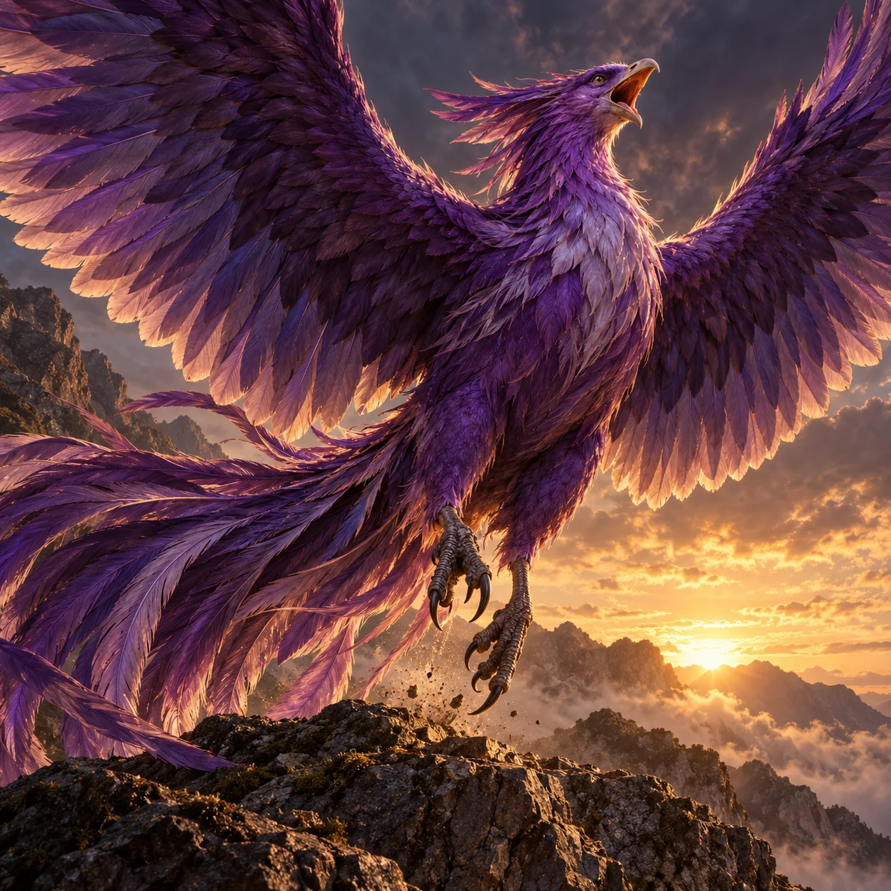
Mostly-purple Yuezhuo singing and taking wing from Mount Qi.
Aura: Threat or awe from sourced anatomy/action: wd-q11174091-c01, wd-q11174091-c04, wd-q11174091-c05, wd-q11174091-c06.
Audit ciri dan sumber
- [object Object]
- [object Object]
- [object Object]
Native1254x1254 and200px inspected; Uji Sangar7/7 yes. One mostly purple phoenix-type divine bird c01/c05 launches from Qi rock singing c04; two wings, two clawed bird legs, one feathered tail, natural eye and open beak. Vast close wings and vigorous takeoff are majestic at200px. No fire, aura, unsourced mixed crest or dragon anatomy. No text, border, borrowed franchise design or gore.
Review sumberONE original square premium painterly cinematic Mitoloka illustration of 鸑鷟.
ANATOMY: ONE divine PHOENIX-TYPE BIRD with plumage MOSTLY PURPLE, one head/two natural eyes, exactly two wings and two bird legs, one flowing feathered tail. Bird anatomy only, no antlers, horns, dragon head, eyes in feathers, flames or glowing jewels. [wd-q11174091-c01, wd-q11174091-c04, wd-q11174091-c05]
MOMENT: Sing out while launching upward from Mount Qi rock, wings driving a mighty downstroke directly above viewer, talons lifting from rock and long purple feather tail sweeping through frame. Open beak in clear singing moment, imposing auspicious divine presence, never evil. [wd-q11174091-c04]
POWER: use only documented physical action or power specified above; when none specified, no supernatural effect.
SCALE & CAMERA: low angle, close and confrontational; creature unmistakable primary subject filling most of square; all distinguishing anatomy visible at200px. Respect documented size, do not invent giant size.
LIGHT & WEATHER: one strong raking low amber light, deep walnut shadows, high contrast silhouette.
SURFACE: tactile painterly realism, rough weathered materials, tangible hair, skin, feathers or scales appropriate to specified anatomy; no plastic.
SETTING: Mount Qi rocky height at dark dawn, mountain slope close behind; bird fills frame, not a tiny bird over a landscape. [wd-q11174091-c04, wd-q11174091-c06]
MOOD: dangerous, uncanny or awe-inspiring as appropriate to documented disposition, never ordinary person or wildlife, calm cute mascot or decorative portrait. Protectors remain protective.
HARD CONSTRAINTS: one square image at least1024x1024. No text, lettering, signature, glyphs, logo, border, frame or watermark; no extra heads, limbs, digits or eyes beyond specified anatomy; no film/game/anime/comic designs. No nudity, exposed genitals, injury, blood or explicit gore. Human figures fully covered in opaque clothing. No generic aura, neon outline, glowing eyes, energy ribbons or invented powers. Choose purple phoenix interpretation c01/c05, not uncertain Zhuyu identification c02. Exact feather arrangement and tail length editorial. No separate five-colour crest attribution from different birds. No fire power documented or shown.
黑蜧
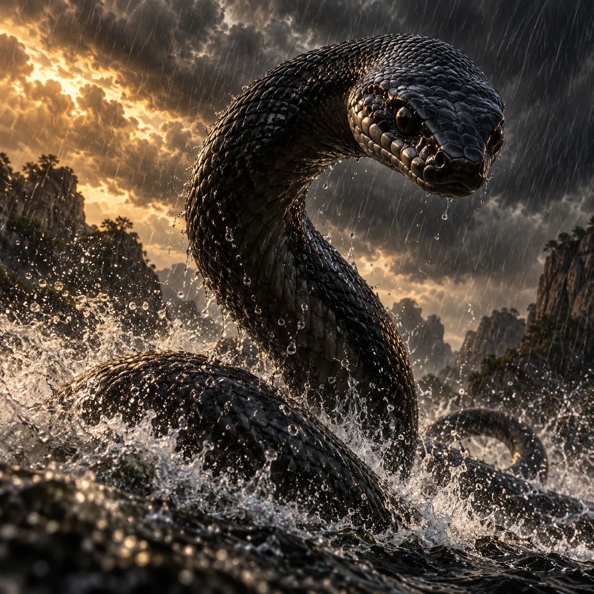
Black limbless Heili leaping from spring into its cloud wind and rain.
Aura: Threat or awe from sourced anatomy/action: wd-q11179559-c01, wd-q11179559-c04, wd-q11179559-c07, wd-q11179559-c06, wd-q11179559-c09.
Audit ciri dan sumber
- [object Object]
- [object Object]
- [object Object]
Native1254x1254 and200px inspected; Uji Sangar7/7 yes. Black limbless serpent with one head/two eyes/no horns, wings or legs, leaping from deep spring c06 amid visibly driving rain, dark clouds and wind c04/c07. Close foreshortened coils and water leap imposing at200px; no added lightning, fire, fangs or glowing eyes. No text, frame, franchise imitation or gore.
Review sumberONE original square premium painterly cinematic Mitoloka illustration of 黑蜧.
ANATOMY: One BLACK divine SERPENT, one snake head/two eyes and a long scaled limbless body with one tail, no legs, wings, horns, whiskers, claws or dragon crest. [wd-q11179559-c01, wd-q11179559-c04, wd-q11179559-c07]
MOMENT: Leap upward from deep spring and arc close toward viewer as clouds thicken into dark overhead masses and heavy rain physically lashes water around the raised black coils; wind drives rain sideways and lifts spray. This is a revered rain-bringer, imposing rather than evil, mouth mostly closed. [wd-q11179559-c04, wd-q11179559-c06, wd-q11179559-c07, wd-q11179559-c09]
POWER: use only documented physical action or power specified above; when none specified, no supernatural effect.
SCALE & CAMERA: low angle, close and confrontational; creature unmistakable primary subject filling most of square; all distinguishing anatomy visible at200px. Respect documented size, do not invent giant size.
LIGHT & WEATHER: one strong raking low amber light, deep walnut shadows, high contrast silhouette.
SURFACE: tactile painterly realism, rough weathered materials, tangible hair, skin, feathers or scales appropriate to specified anatomy; no plastic.
SETTING: Deep sacred spring beneath thick rain clouds, black water churning below, distant rocks for depth. [wd-q11179559-c04, wd-q11179559-c06, wd-q11179559-c07]
MOOD: dangerous, uncanny or awe-inspiring as appropriate to documented disposition, never ordinary person or wildlife, calm cute mascot or decorative portrait. Protectors remain protective.
HARD CONSTRAINTS: one square image at least1024x1024. No text, lettering, signature, glyphs, logo, border, frame or watermark; no extra heads, limbs, digits or eyes beyond specified anatomy; no film/game/anime/comic designs. No nudity, exposed genitals, injury, blood or explicit gore. Human figures fully covered in opaque clothing. No generic aura, neon outline, glowing eyes, energy ribbons or invented powers. Choose black snake form c01/c07 rather than invent dragon limbs from poetic divine-dragon name c06. No lightning, fire or glow. Rain, clouds and wind are sourced c04/c07. Scale unspecified, close framing rather than invented giant comparison.
馬鹿
Menunggu gambar yang lolos audit
鴻鵠
Menunggu gambar yang lolos audit
虾兵蟹将
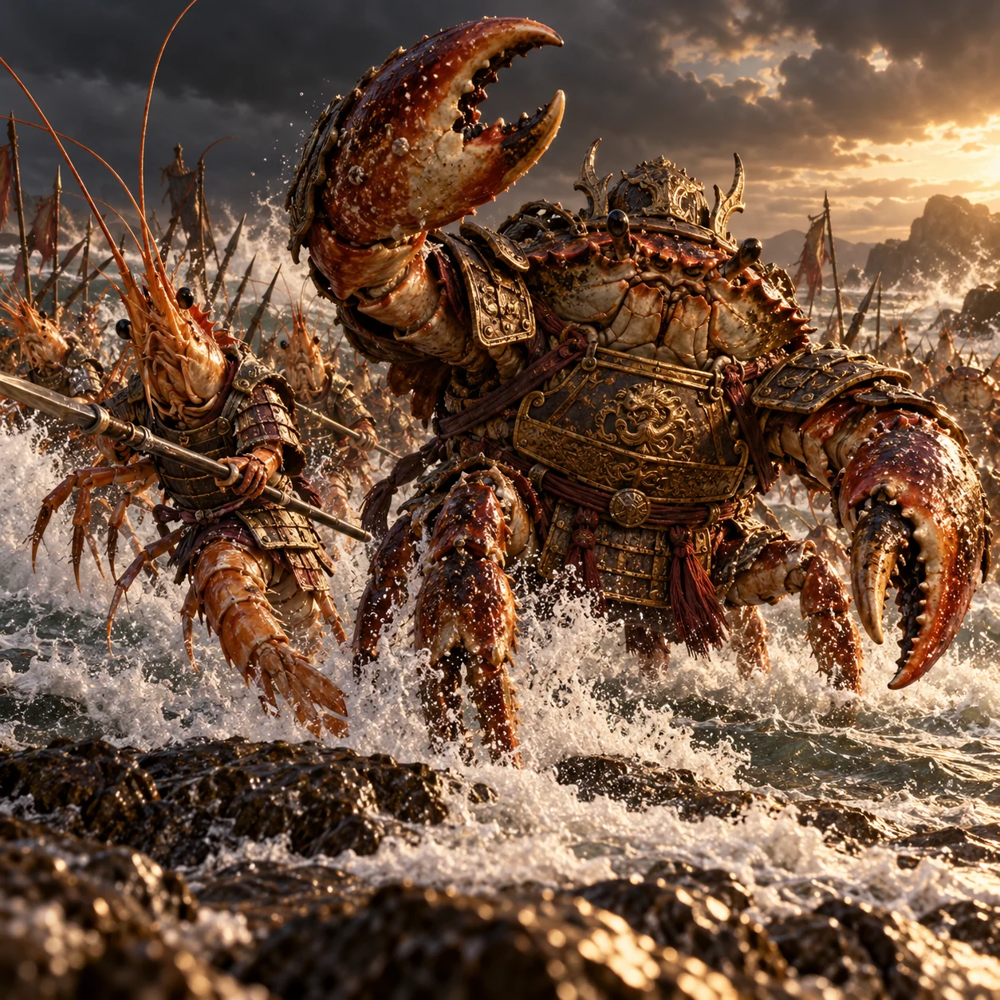
Xiabing Xiejiang, shrimp soldiers and crab generals of the sea Dragon King
Aura: Their army physically charges out of the tide; no supernatural attack effects; white spray displaced by shells
Audit ciri dan sumber
- [object Object]
- [object Object]
- [object Object]
Viewed native1254 and200. Sangar7/7: armored crustacean army dominates, enormous pincer at200 remains threatening, active tide-charge not pose; splash physical and c02 tide action, no powers invented; crab two eyes/two claws and legs partly occluded by seawater, shrimp identifiable antennae and shell rather than human faces; no text/franchise/gore, not ordinary shellfish. Armor, spear and pennants editorial military-role props within soldiers/generals c01, not source-specific relics.
Review sumberONE original square premium painterly cinematic Mitoloka illustration of Xiabing Xiejiang, shrimp soldiers and crab generals of the sea Dragon King. ANATOMY: one large crab general and one shrimp soldier leading troop shapes behind, unmistakable living crustacean heads and segmented shells, crab with two claws and eight walking legs, shrimp long antennae and segmented tail; modest opaque period armor editorially over shells, no human faces. MOMENT: Storm ashore directly at camera, crab pincers raised, shrimp thrusting from breaking tide. POWER: Their army physically charges out of the tide; no supernatural attack effects; white spray displaced by shells. SCALE & CAMERA: extreme low close angle; subject fills frame, natural documented size, never unsupported gigantic. LIGHT & WEATHER: one warm lateral source, deep shadows, crisp rim, physically moving dust/water only. SURFACE: tactile coarse textures, rich walnut/antique-gold palette. SETTING: dark Chinese seashore at the crest of the tide from Jing Shi Tong Yan quotation. MOOD: dangerous or awe-inspiring, never ordinary, cute, calm or decorative. HARD CONSTRAINTS: no text, lettering, symbols, logos, border, signature, watermark; no extra heads or limbs; no franchises; no nudity, transparent clothes, blood, wounds or explicit gore; no generic glow aura, neon lines or energy ribbons.
猪豚蛇
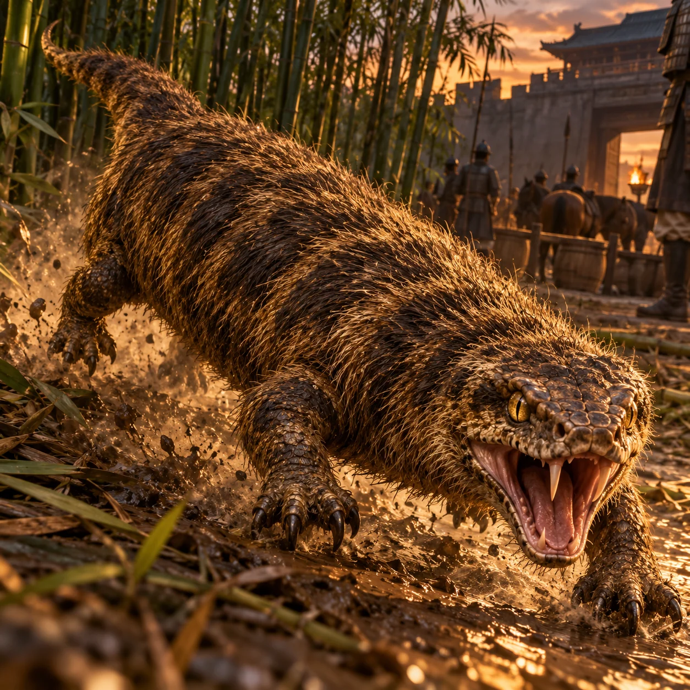
Zhutunshe, the hairy four-legged serpent of Chinese legend
Aura: Instantly deadly bite reputation conveyed by uninjured biting attack; no magical beams, venom mist or gore
Audit ciri dan sumber
- [object Object]
- [object Object]
- [object Object]
Viewed native1254 and200. Sangar7/7: straight charging hairy viper dominates; gaping two fangs and hairy fourleg anatomy remain dangerous at200, active bamboo emergence c07/c09, only kicked dirt; one head/two eyes/four separated reptilian legs (far rear partly foreshortened but visible)/one tail, no pig snout; source threechi chosen, boot/trough behind support small real size; no text/franchise/gore, clearly not ordinary mammal or snake.
Review sumberONE original square premium painterly cinematic Mitoloka illustration of Zhutunshe, the hairy four-legged serpent of Chinese legend. ANATOMY: one thick short snake body entirely covered in coarse hair, one unmistakable viper head, two eyes and snake jaws, exactly FOUR short legs visible two either side, one tapering snake tail; three chi length and pestle thickness variant, no pig snout, horns or dragon head. MOMENT: Charge in a rigid straight line out of bamboo toward viewer, snake mouth open to bite, four legs churning dirt. POWER: Instantly deadly bite reputation conveyed by uninjured biting attack; no magical beams, venom mist or gore. SCALE & CAMERA: extreme low close angle; subject fills frame, natural documented size, never unsupported gigantic. LIGHT & WEATHER: one warm lateral source, deep shadows, crisp rim, physically moving dust/water only. SURFACE: tactile coarse textures, rich walnut/antique-gold palette. SETTING: bamboo thicket outside south gate at Jiankang during evening military drill; distant boot and horse trough establish small source size. MOOD: dangerous or awe-inspiring, never ordinary, cute, calm or decorative. HARD CONSTRAINTS: no text, lettering, symbols, logos, border, signature, watermark; no extra heads or limbs; no franchises; no nudity, transparent clothes, blood, wounds or explicit gore; no generic glow aura, neon lines or energy ribbons.
CRITICAL ANATOMY/COMPOSITION: use a THREE-QUARTER SIDE VIEW showing the full SHORT FAT STRAIGHT cylindrical serpent body length from head to one tapering tail. Exactly four short hairy legs, all FOUR complete legs clearly separated and visible on ground, two near-side and two far-side, none hidden by body. Head at lower right reaches camera, tail at upper left. Not mammal: no mammalian shoulders, paws or rounded ears. Legs are short reptilian legs. Snake body as thick as a pestle. Low close camera, a normal human boot far back to confirm three-chi natural length.
斗牛
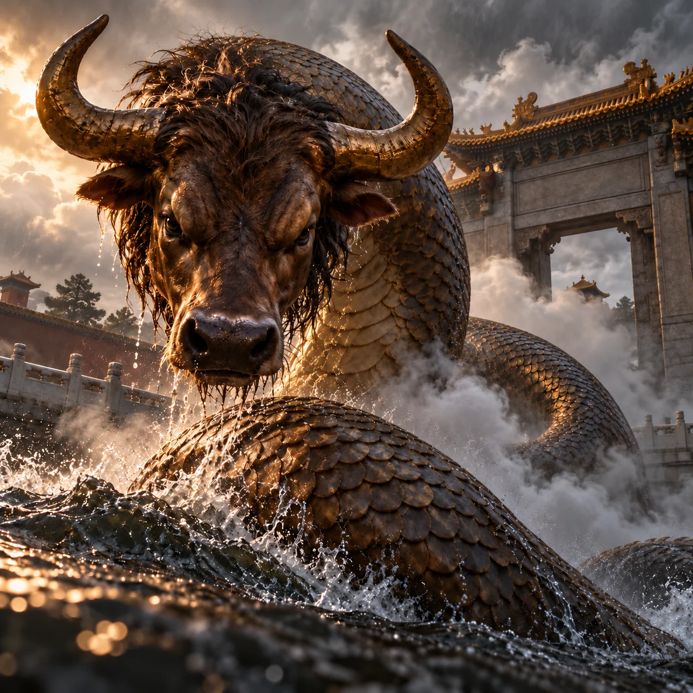
Douniu, the bull-headed dragon-scaled creature of Chinese legend
Aura: Generate thick physical banks of ordinary mist and cloud during rainy overcast weather, gathering around body rather than colored glow
Audit ciri dan sumber
- [object Object]
- [object Object]
- [object Object]
Viewed native1254x1254,200px and gate-native crop. Sangar7/7 yes: bull head and coiling flat-scaled body dominate; threatening close water surge readable at200px; exactly one head/two horns/two natural eyes/one coiling body, no limbs/wings/dorsal spikes. Physical mist/cloud c03 and natural Haizi splash retained. Inspected entire gate at native plus crop: lintel and vertical plaques now plain weathered stone, no Chinese lettering, pseudo-writing, symbols or watermark anywhere. Roof ornament is nonletter architectural form; no generic aura, gore or borrowed design.
Review sumberEdit ONLY the architecture lettering in the supplied Douniu image. The gate behind the creature at upper right currently has Chinese writing or pseudo-inscriptions on its horizontal lintel plaque and decorative bands. REMOVE ALL WRITING, LETTERS, CHARACTERS, CALLIGRAPHY, GLYPHS, SYMBOL-LIKE MARKS AND PSEUDO-WRITING from EVERY architectural surface in the ENTIRE image, including horizontal gate lintel, central plaques, side plaques, vertical pillars, decorative bands, gateways and walls. Replace every plaque and patterned inset with completely BLANK PLAIN STONE: broad uninterrupted unmarked stone surfaces with only natural irregular weathering, no repeating ornamental marks, no carved signs or painted patterns. Keep the overall gateway silhouette, roof tiles, roof ridge profile and opening; architecture should still read as the same gateway but all wall panels and plaques must be plainly uninscribed.
PRESERVE EVERYTHING ELSE: exactly one living bovine head with two bull horns and two natural eyes, broad bull muzzle, dark hair, ONE coiling body of flat overlapping dragon scales, the already smooth rounded dorsal contour with NO spikes or fins, thick physical mist/cloud, rainy overcast weather, dark Haizi water and splashes, low confrontational camera, creature scale, pose, colours and premium painterly cinematic style. No new body parts, no new ornaments, no glowing aura or other magic, no gore. Do not change the creature.
HARD FINAL CHECK: there must be ZERO text, letters, numbers, Chinese characters, signatures, pseudo-inscriptions or watermark ANYWHERE, especially the upper-right gateway. Plain blank stone panels, not blurred or substituted writing. Preserve square native resolution at least1024x1024.
却火雀
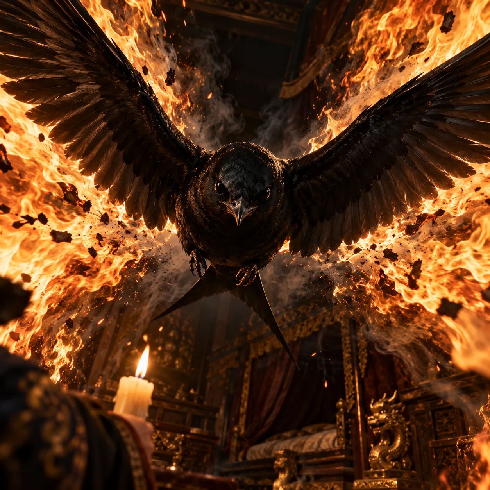
Quehuoque, the pure black swallow-shaped fire-dispersing bird
Aura: Fire disperses by itself around the bird leaving a dramatic clean dark gap; the bird extinguishes fire, it does NOT emit fire and its eyes do not glow
Audit ciri dan sumber
- [object Object]
- [object Object]
- [object Object]
Viewed native1254 and200. Sangar7/7: black swallow dominates, wing spread against forcefully parting fire awe at200; flying moment not perch; surrounding fire retreats leaving clear unburnt dark center from c03/c06, not fire breath; one head/two eyes/two wings/two feet/forked tail, black swallow variantc01/c06, candle gives natural size; no glyph/text/franchise/gore or extra anatomy; exceptional extinguishing story visible, not ordinary bird.
Review sumberONE original square premium painterly cinematic Mitoloka illustration of Quehuoque, the pure black swallow-shaped fire-dispersing bird. ANATOMY: one pure-black swallow-sized bird, one head, two black natural eyes, two swept pointed wings, two feet and one forked swallow tail, all feathers unburnt. MOMENT: Sweep straight toward camera through the center of a flame, spread black wings filling frame while the flames bend and retreat forcefully away on both sides. POWER: Fire disperses by itself around the bird leaving a dramatic clean dark gap; the bird extinguishes fire, it does NOT emit fire and its eyes do not glow. SCALE & CAMERA: extreme low close angle; subject fills frame, natural documented size, never unsupported gigantic. LIGHT & WEATHER: one warm lateral source, deep shadows, crisp rim, physically moving dust/water only. SURFACE: tactile coarse textures, rich walnut/antique-gold palette. SETTING: an imperial Chinese sleeping hall suggested in deep shadow, a human-held wax candle below as natural-size comparison; select Duyang Zabian variant. MOOD: dangerous or awe-inspiring, never ordinary, cute, calm or decorative. HARD CONSTRAINTS: no text, lettering, symbols, logos, border, signature, watermark; no extra heads or limbs; no franchises; no nudity, transparent clothes, blood, wounds or explicit gore; no generic glow aura, neon lines or energy ribbons.
Xacio
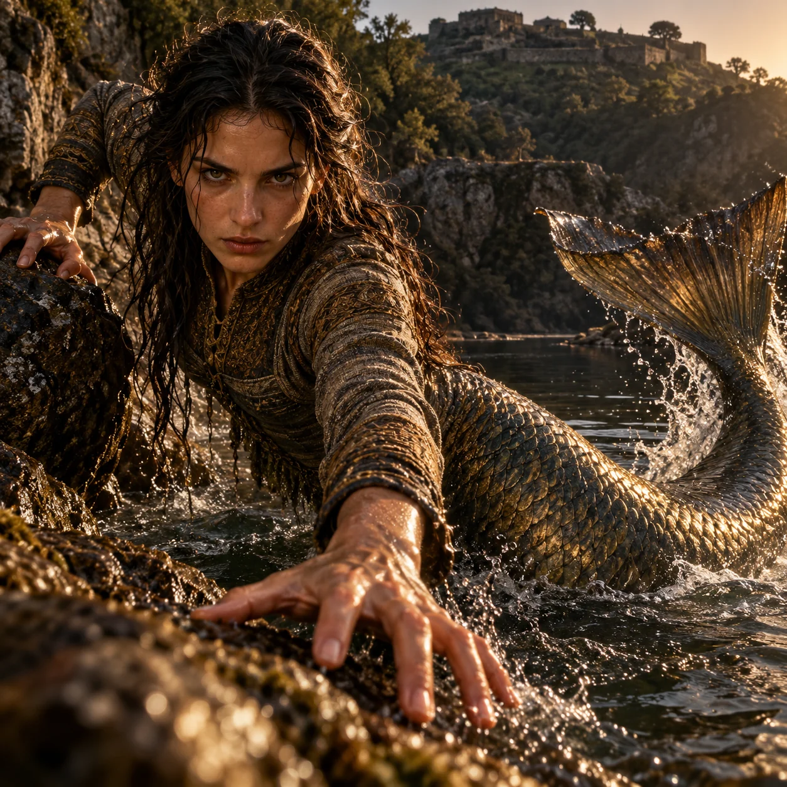
Xacio, the half-human half-fish being of Galician river pools
Aura: No documented physical supernatural powers; ordinary water displaced by swimming tail only
Audit ciri dan sumber
- [object Object]
- [object Object]
- [object Object]
Viewed native1254 and200. Sangar7/7: one halfhuman halffish figure dominates, direct intense stare and reaching foreshortened hand retain confrontation at200; emerging/swimming moment, water ordinary physical splash only, no powers; one head/two eyes/two human arms with natural hands/one continuous scaled fish lower body and caudal fin/no human legs; opaque long-sleeved bodice, no text/franchise/gore; fish tail large and unambiguous so does not read as ordinary woman. Separate lizardtail human-guise variant not mixed.
Review sumberONE original square premium painterly cinematic Mitoloka illustration of Xacio, the half-human half-fish being of Galician river pools. ANATOMY: one adult female human head and upper torso, two eyes, exactly two human arms, completely opaque thick woven long-sleeved bodice fully covering chest and abdomen, seamless fish lower half with one long scaled tail and one broad caudal fin, NO human legs, no lizard tail because that is another variant. MOMENT: Emerge forcefully from the deep pool close to camera, arching the large visible fish tail out across foreground, one hand gripping wet rock and the other extending toward the viewer; intense commanding gaze, neither smiling nor neutral. POWER: No documented physical supernatural powers; ordinary water displaced by swimming tail only. SCALE & CAMERA: extreme low close angle; subject fills frame, natural documented size, never unsupported gigantic. LIGHT & WEATHER: one warm lateral source, deep shadows, crisp rim, physically moving dust/water only. SURFACE: tactile coarse textures, rich walnut/antique-gold palette. SETTING: dark deep pool of the Miño below Castro de Marce, Galician river rocks and shadowed hillfort far back. MOOD: dangerous or awe-inspiring, never ordinary, cute, calm or decorative. HARD CONSTRAINTS: no text, lettering, symbols, logos, border, signature, watermark; no extra heads or limbs; no franchises; no nudity, transparent clothes, blood, wounds or explicit gore; no generic glow aura, neon lines or energy ribbons.
Brunnmigi
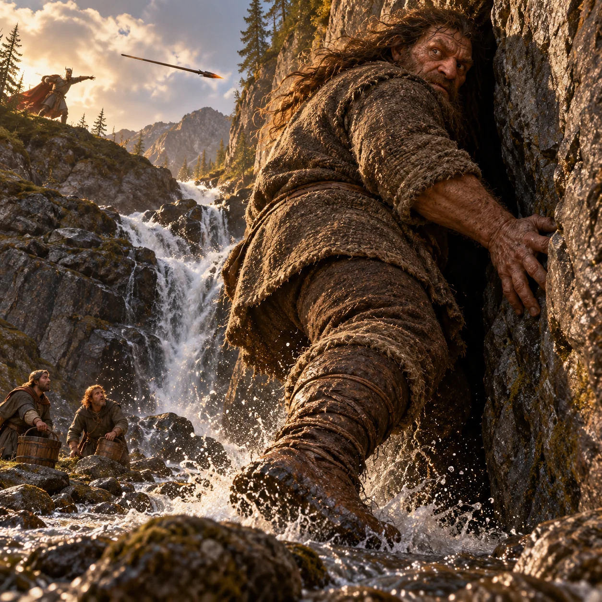
Brunnmigi, the great well-defiling Norse being called a giant and troll in Hálfs saga
Aura: The source giant darts into the cliff, physically vanishing into the stone opening; no glowing portal, runes or magic beams
Audit ciri dan sumber
- [object Object]
- [object Object]
- [object Object]
Viewed native1254 and200. Sangar7/7: giant fills height and broad torso, close foot and small men near stream show size at200; physically squeezing into cliff c06 and heated spear c05 active story; no portal/aura/fox invention, only stream splash and small heated point; one humanlike troll head/two eyes/two arms/two legs, limbs plausibly occluded as body enters stone, opaque coarse wool; no text/franchise/gore; giant with cliff-entry myth and spear, not ordinary man. Face/clothes details editorial within giant/troll source.
Review sumberONE original square premium painterly cinematic Mitoloka illustration of Brunnmigi, the great well-defiling Norse being called a giant and troll in Hálfs saga. ANATOMY: one huge humanoid giant/troll, one natural humanlike head, two eyes, two arms, two legs, broad coarse face with no invented horns or tusks, fully opaque coarse wool tunic and trousers; not a fox because fox kenning does not establish body. MOMENT: Dart bodily into a narrow cliff opening while twisting its face back toward the viewer, one huge hand braced on rock, one foot displacing the stream; a small heated spear hurled by a distant king approaches without touching it. POWER: The source giant darts into the cliff, physically vanishing into the stone opening; no glowing portal, runes or magic beams. SCALE & CAMERA: extreme low close angle; subject fills frame, natural documented size, never unsupported gigantic. LIGHT & WEATHER: one warm lateral source, deep shadows, crisp rim, physically moving dust/water only. SURFACE: tactile coarse textures, rich walnut/antique-gold palette. SETTING: stream falling from a Norse cliff, two tiny men with water vessels at the bank and a distant spear-throwing king. MOOD: dangerous or awe-inspiring, never ordinary, cute, calm or decorative. HARD CONSTRAINTS: no text, lettering, symbols, logos, border, signature, watermark; no extra heads or limbs; no franchises; no nudity, transparent clothes, blood, wounds or explicit gore; no generic glow aura, neon lines or energy ribbons.
Crieur
Menunggu gambar yang lolos audit
Dúrnir
Menunggu gambar yang lolos audit
Forest spirits (Polish mythology)
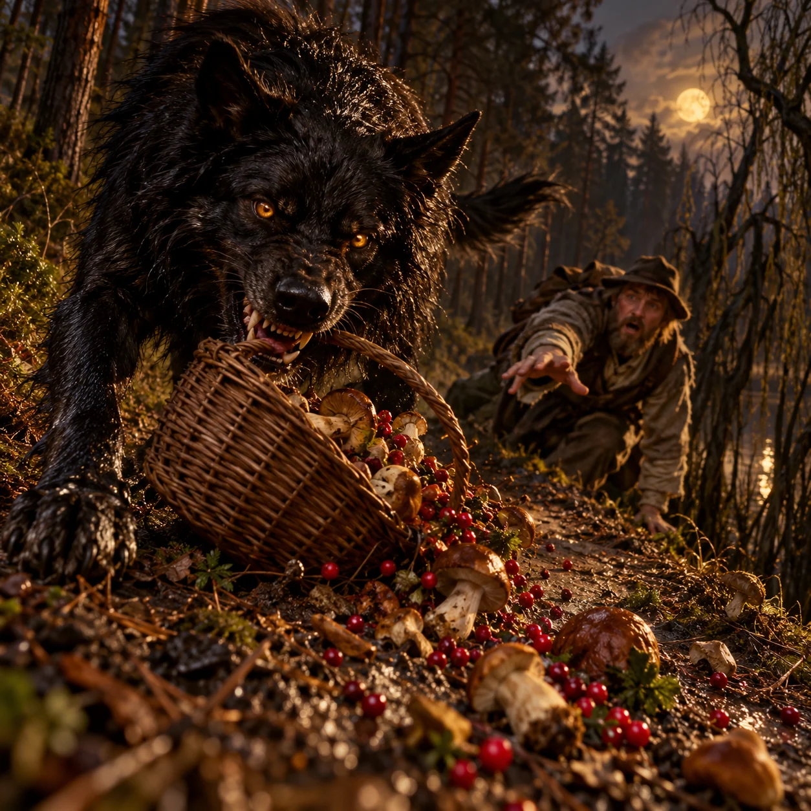
Polish forest spirit, Boruta appearing as a black dog
Aura: The documented forest spirit spills gathered mushrooms and berries and leads people astray; only ordinary physical contact and scattered berries, no supernatural energy
Audit ciri dan sumber
- [object Object]
- [object Object]
- [object Object]
Viewed native1254 and200. Sangar7/7: black dog dominates with threatening snarl and basket theft at200; physical basket-spilling action c03 with lost traveller c09, no powers; one dog head/two reflective amber eyes/four canine legs mostly behind wicker and body/one tail plausibly out of crop, no horns or supernatural eye light; no text/franchise/gore. The unique mushroom-and-berry spilling at night is explicit source event, not generic dog portrait. Dog not giant: extreme near perspective only.
Review sumberONE original square premium painterly cinematic Mitoloka illustration of Polish forest spirit, Boruta appearing as a black dog. ANATOMY: one natural-sized black dog, one head, two natural eyes, four canine legs, one tail, coarse wet black fur, no horns, glowing eyes, extra anatomy or human clothes. MOMENT: Confront the camera at close distance, snarl and deliberately rake a mushroom-and-berry basket from a confused traveller's hands, scattering its contents across the narrow forest dyke as the traveller is drawn off the good path. POWER: The documented forest spirit spills gathered mushrooms and berries and leads people astray; only ordinary physical contact and scattered berries, no supernatural energy. SCALE & CAMERA: extreme low close angle; subject fills frame, natural documented size, never unsupported gigantic. LIGHT & WEATHER: one warm lateral source, deep shadows, crisp rim, physically moving dust/water only. SURFACE: tactile coarse textures, rich walnut/antique-gold palette. SETTING: night in Polish pine woods and a narrow earthen dyke by dry willows, wrong twisting path beyond, a human traveller behind establishes normal dog scale. MOOD: dangerous or awe-inspiring, never ordinary, cute, calm or decorative. HARD CONSTRAINTS: no text, lettering, symbols, logos, border, signature, watermark; no extra heads or limbs; no franchises; no nudity, transparent clothes, blood, wounds or explicit gore; no generic glow aura, neon lines or energy ribbons.
Gegant negre
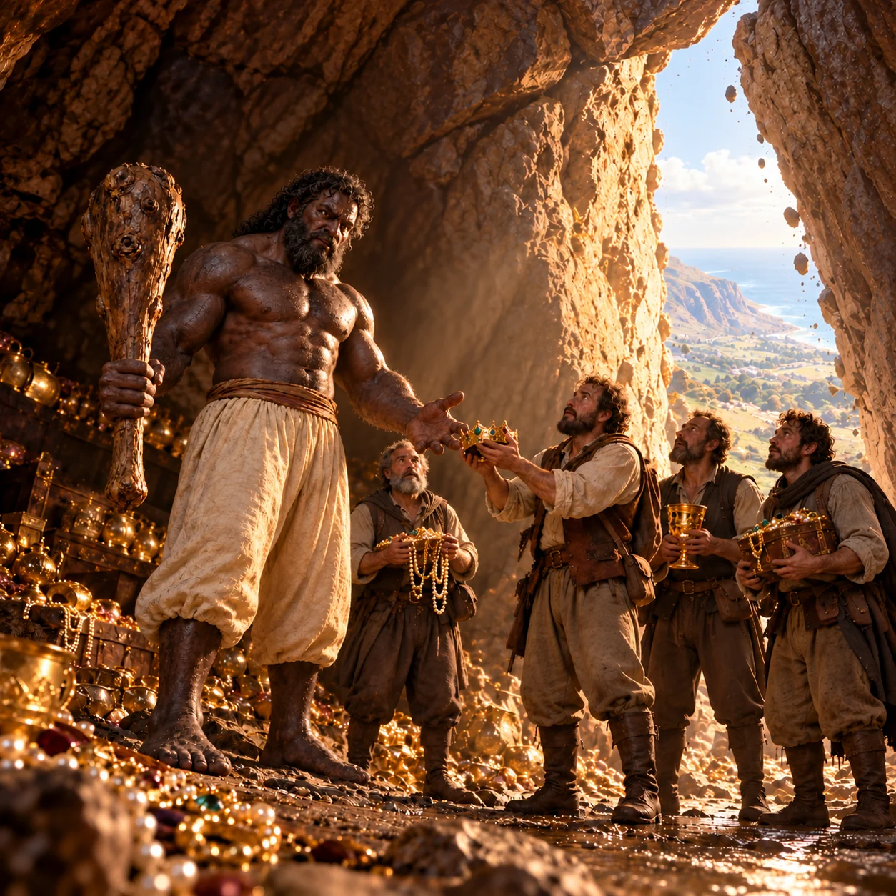
Gegant negre, the dark treasure-guardian of Valencian legend
Aura: His cave-sealing spell is undone when stolen jewels are returned: two solid cave walls physically slide apart opening a slit to outside; no runes, colored aura or glowing magic token
Audit ciri dan sumber
- [object Object]
- [object Object]
- [object Object]
Viewed native1254 and200. Sangar7/7: charcoal-dark guardian and club dominate left, grim gaze and heavy club/demand read threatening at200; actual returned-jewels demand and caveopening c06, not neutral pose. Physical sliding stone and falling grit only, no generic aura. One head/two eyes/two arms/two legs, opaque loose breechesc04; exactly4adultmen stand next to him. Final guardian height reduced: approximately3–4spans over men (standing crown-returner head near shoulder), not colossal. No text/franchise/gore; living dark guardian actively controlling treasure-cave release, not ordinary bystander.
Review sumberEdit ONLY the size of the guardian in this treasure-cave illustration. Preserve EXACTLY four standing adult male visitors, their normal height, hands returning jewels, cave opening, treasure, the guardian's black/dark skin, one wooden club, one head/two arms/two legs and fully opaque loose breeches. The guardian is currently too huge. REDUCE THE GUARDIAN'S WHOLE BODY HEIGHT BY TWENTY-FIVE PERCENT while keeping his feet on the same ground beside the men; his head should move DOWN by about200pixels in this square image, to around one normal head-height above the standing visitors' heads, around image y350 rather than y150. The adult man giving back the crown should come up to approximately the guardian's SHOULDER, not his waist. Guardian is about60–80cm taller than a normal man, NOT a colossal giant, no forced-perspective excuse. Keep broad muscular menacing face and reaching demand gesture, physical cave-opening spell and low warm dramatic lighting. No text, glyphs, signs, frame, franchise, extra limbs, nudity or gore.
Gnefro
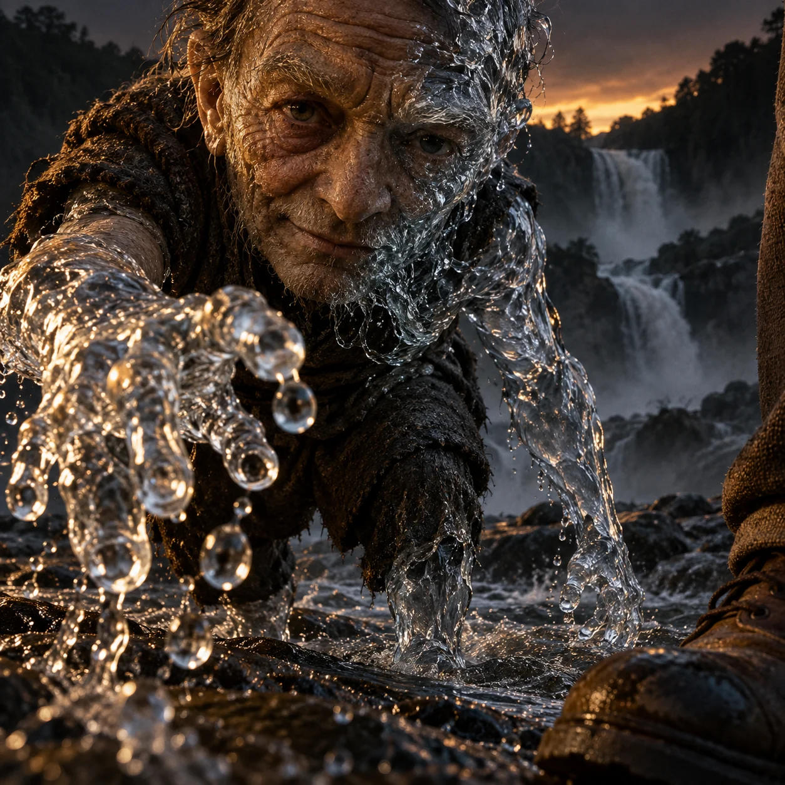
Gnefro, the small cheerful rough-skinned water sprite of Umbria
Aura: Self-transformation into water c07: its own arm and legs literally become water, no water-controlling waves, no independent powers or neon outline
Audit ciri dan sumber
- [object Object]
- [object Object]
- [object Object]
Viewed native1254 and200. Sangar7/7: ancient wrinkled sprite dominates, half-liquid face and reaching water hand awe at200; ongoing tangible bodily self-transformationc07, no calm pose, rivercontrol/glow absent. One coherent head/two eyes/two arms/two legs in liquid transition, no pointed ears/horns or extra limbs; adjacent adult boot confirms under-meterc02; opaque coarse tunic/trousers solid, not transparentcloth. No text/franchise/gore. Third version replaces cute roundcheeked face with craggy mature knowing halfsmile, remains benevolent mischievous c09, not evil. Self-water transformation makes clearly supernatural rather than ordinary man/gnome mascot.
Review sumberONE original square premium cinematic painterly illustration of Gnefro, the small rough-wrinkled water sprite of Umbria. Depict a very ancient craggy small humanoid under one meter, two ordinary human eyes deeply recessed under heavy weathered brow, rough coarse folded skin like an elderly river hermit, thin natural lips with only one corner lifted in a knowing mischievous half-smile. Absolutely NOT a cute round-cheeked gnome, cartoon, child, mascot, oversized eyes or red nose; no pointed ears, no cap. He remains benign and quietly playful, never evil. MOMENT: leaning forward close to viewer, his OWN BODY physically becoming clear ordinary river water [gnefro-c07]; both lower legs and one arm are completely liquid, the right half of the wrinkled cheek and neck now liquid water flowing directly into his shoulder, but ONE HEAD still coherently visible. Solid humanlike half and clear watery half of face show the startling transformation. The liquid hand reaches out immediately next to camera and breaks into large weighty droplets. Torso covered by entirely OPAQUE thick dark coarse tunic and trousers, no transparent clothes. CAMERA extreme low macro view; face and transforming hand fill almost entire frame, nearby adult boot at right gives honest small size [gnefro-c02/c03]. SETTING river Nera at Marmore falls, very dark dusk with only thin amber horizon behind and one narrow warm sidelight [gnefro-c01/c06]. Deep black shadows, austere sober expression, awe through impossible physical self-transformation, no control of river/weather, no generic magical glow, beams or energy ribbons. Photographically tangible wet surfaces and aged skin, mature dignified face rather than appealing toy design. No blood/gore, no text/signatures/symbols/borders/watermarks, no franchise designs. One head, two arms, two legs in process of turning into water, no additional limbs.
Greiss
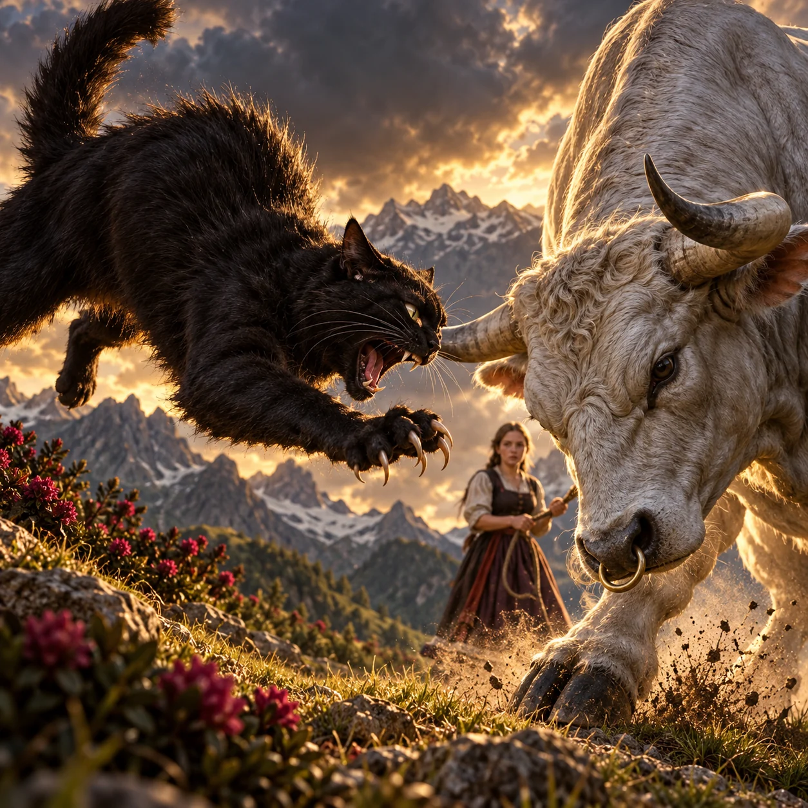
Greiss, the Alpine cattle-killing demon in its documented black-cat guise
Aura: Documented demon confronted by the silver-white bull led uphill by maiden; no disease fog, dying animals, magical eyes or powers invented
Audit ciri dan sumber
- [object Object]
- [object Object]
- [object Object]
Viewed native1254 and200. Sangar7/7: black-cat guise dominates left with huge bared claws; active aerial clash with silverwhite bull and maiden at200, not calm portrait. No disease effects or glowing eyes; only ordinary kicked dirt, bull defeat c03/tormentc06. One cat head/two eyes/four limbs with far forepaw foreshortened/one tail; bull two horns/nose ring c10, no hybrid invention. No text/franchise/gore. Specific folklore showdown with maiden-led silverwhite bull differentiates ordinarycat; cat size by close perspective, not giant claim.
Review sumberONE original square premium painterly cinematic Mitoloka illustration of Greiss, the Alpine cattle-killing demon in its documented black-cat guise. ANATOMY: one natural-sized black cat with one head, two natural feline eyes, four legs, one tail, no horns or luminous eyes; a far larger silver-white bull with normal bovine anatomy and nose ring facing it; a distant fully clothed maiden holding the bull's lead. MOMENT: Leap with arched back and bared teeth directly toward the charging silver-white bull's face, foreclaws extended, bull lowering horns to defeat the demon; tight close profile of malicious cat dominates foreground, clearly violent showdown rather than pet play. POWER: Documented demon confronted by the silver-white bull led uphill by maiden; no disease fog, dying animals, magical eyes or powers invented. SCALE & CAMERA: extreme low close angle; subject fills frame, natural documented size, never unsupported gigantic. LIGHT & WEATHER: one warm lateral source, deep shadows, crisp rim, physically moving dust/water only. SURFACE: tactile coarse textures, rich walnut/antique-gold palette. SETTING: Alpine pasture at Surenenalp with dark alpine roses and stormy mountain silhouettes. MOOD: dangerous or awe-inspiring, never ordinary, cute, calm or decorative. HARD CONSTRAINTS: no text, lettering, symbols, logos, border, signature, watermark; no extra heads or limbs; no franchises; no nudity, transparent clothes, blood, wounds or explicit gore; no generic glow aura, neon lines or energy ribbons.
Homem do chapéu de ferro
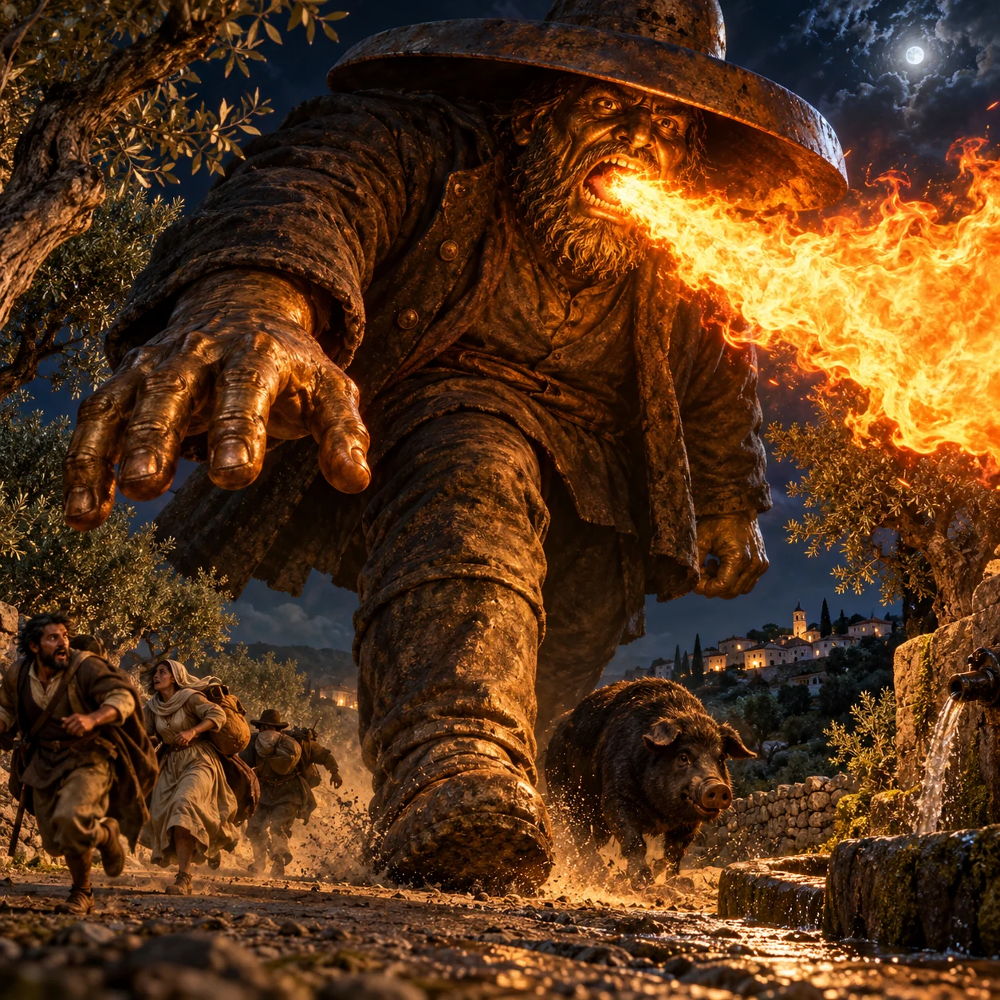
Homem do chapéu de ferro, the bronze-coloured colossal iron-hatted giant of Algarve legend
Aura: Spits actual flames from mouth when enraged; flames illuminate bronze face and rusty iron brim, no generic body aura and no lightning attacks
Audit ciri dan sumber
- [object Object]
- [object Object]
- [object Object]
Viewed native1254 and200. Sangar7/7: colossal bronze giant and enormous iron hat dominate, flame mouth immediately threatening at200; striding reaching confrontation, sourcec05/c09 actual mouth fire lights face, no unsupported lightning; one head/two eyes/two arms/two legs with near foot and little travellers confirming colossalc05, one black pig c03; opaque coat/trousers and natural hands, no text/franchise/gore; unmistakable supernatural iron-hatted flame-spitter rather than ordinary man.
Review sumberONE original square premium painterly cinematic Mitoloka illustration of Homem do chapéu de ferro, the bronze-coloured colossal iron-hatted giant of Algarve legend. ANATOMY: one colossal bronze-coloured humanlike giant, one head, two eyes, two arms, two legs, an ENORMOUS broad iron hat sunk low onto head, a wide monstrous mouth; fully opaque dark coarse coat and trousers; one black pig companion at his foot, no horns or extra heads. MOMENT: Stride across the road toward the viewer and belch a strong physical tongue of orange fire from his gaping mouth, one huge hand reaching down toward tiny fleeing travellers below olive branches. POWER: Spits actual flames from mouth when enraged; flames illuminate bronze face and rusty iron brim, no generic body aura and no lightning attacks. SCALE & CAMERA: extreme low close angle; subject fills frame, natural documented size, never unsupported gigantic. LIGHT & WEATHER: one warm lateral source, deep shadows, crisp rim, physically moving dust/water only. SURFACE: tactile coarse textures, rich walnut/antique-gold palette. SETTING: Algarve roadside at midnight, olive and fig trees and a spring; small human figures beside the giant's foot establish documented colossal size. MOOD: dangerous or awe-inspiring, never ordinary, cute, calm or decorative. HARD CONSTRAINTS: no text, lettering, symbols, logos, border, signature, watermark; no extra heads or limbs; no franchises; no nudity, transparent clothes, blood, wounds or explicit gore; no generic glow aura, neon lines or energy ribbons.
Ihika
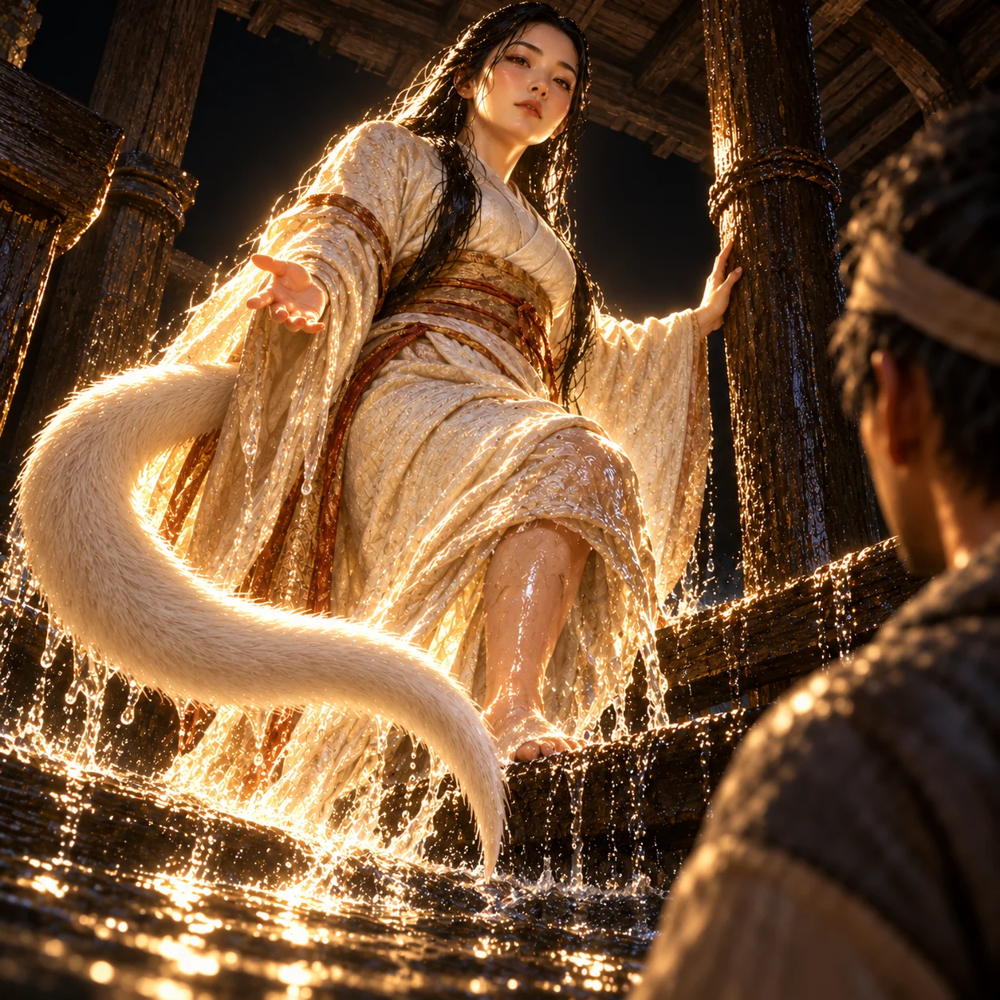
Ihika, the shining tailed Japanese earthly deity encountered by Jinmu
Aura: The deity and water are shining as documented: soft strong white physical light emitted from her figure and reflected brightly in wet timbers and surrounding water; no energy ribbons, runes or unrelated elemental control
Audit ciri dan sumber
- [object Object]
- [object Object]
- [object Object]
Viewed native1254 and200. Sangar7/7: shining tailed goddess dominates, white furry single tail and revelatory river light remain obvious and awe at200; active knee-up emergence and offered greeting hand, not neutral standing. Documentary shiningc02/c05/c07 lights physical wet beams, water and observer; no unrelated power. One human head/two eyes/two arms/two legs/one tail, no animal ears/horns, opaque layered robes (lower calf visible below lifted hem, no nudity). No text/franchise/gore, divine shining tailed emergence rather than ordinary woman. Respectful calm dignity for living tradition; tail texture/robe editorial within tailed-figure interpretation.
Review sumberEdit this Ihika goddess illustration while preserving her one human head, two eyes, two arms, two legs, single plain furred tail, completely opaque layered robe and early Japanese wooden river-well access. Make the exact documented revelation unmistakable: she is actively RISING from the water with one knee lifting to wet beam, water cascading physically from the hem, one arm opens in a solemn greeting toward the nearby traveller, face turns downward with calm commanding sacred dignity. NOT a fashion pose. Change background to DARK NIGHT with NO sun, sunset, skylight or external light source. The single dominant white light comes FROM THE SHINING DEITY HERSELF and her shining river water, softly illuminating the undersides of beams, visitor's face and wet wood; obvious physical local illumination, no abstract aura/halo/ribbons or sparkles. Keep the single tail very clearly visible sweeping across foreground, no extra animal ears or horns, no weapons, no invented regalia, no cosmic giant size. Awe-inspiring reverent revelation, never sinister, cute or ordinary. No text, symbols, signature, watermark, franchise design or gore. Cloth entirely opaque, no translucence.
Illhveli
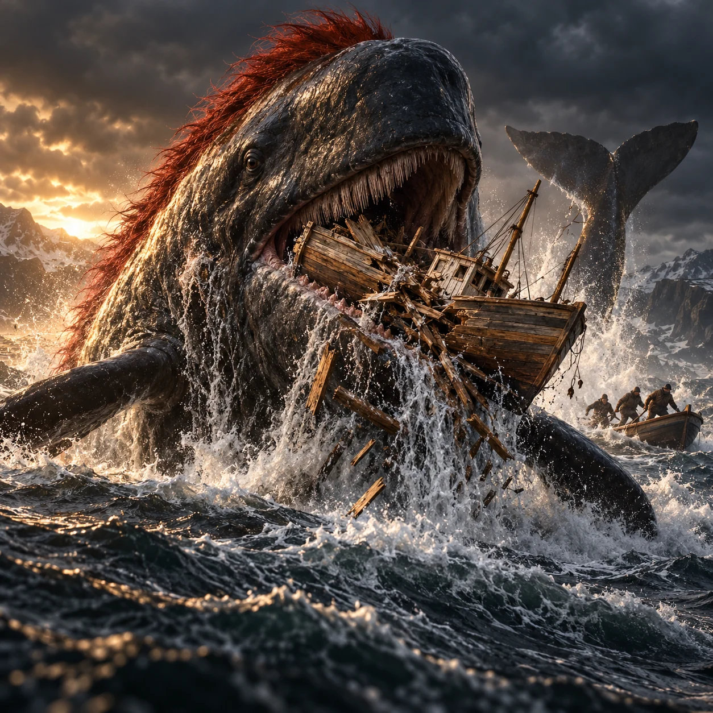
Illhveli, Icelandic evil whale in the red-haired Rauðkembingur variant
Aura: Physically smash a boat in its jaws as documentedc08; blow only clear water spray without smoke c07, violent ordinary seawater displacement, no magic beams
Audit ciri dan sumber
- [object Object]
- [object Object]
- [object Object]
Viewed native1254 and200. Sangar7/7: redback-haired whale fills frame, boat crushed visibly in jaws at200, active biting/splintering rather than ordinary whale; c08 physical boatcrushing and c12 coarse red spinal hair, c07 only clear spray/no smoke. One whale head/two pectoral flippers/one tail with lobes behind/right, no horns/extra head/horse form; eyes natural and near eye visible. No letters/franchise/gore; intact fleeing people in tender, no consumption displayed. Generic whale-like polymorphous formc01, no exact species claim.
Review sumberONE original square premium painterly cinematic Mitoloka illustration of Illhveli, Icelandic evil whale in the red-haired Rauðkembingur variant. ANATOMY: one massive living whale-like sea monster, one broad whale head, two natural eyes, two pectoral flippers, one whale tail, wet dark grey whale skin; a clearly visible coarse red HAIR crest along back, no horse head, horns, extra fins or glowing eyes. MOMENT: Rear up directly before the viewer, take an entire wooden fishing boat across its gigantic open jaws and crush the boat's middle into splintering timbers; crew flee uninjured toward a loose small tender in background, no person being swallowed. POWER: Physically smash a boat in its jaws as documentedc08; blow only clear water spray without smoke c07, violent ordinary seawater displacement, no magic beams. SCALE & CAMERA: extreme low close angle; subject fills frame, natural documented size, never unsupported gigantic. LIGHT & WEATHER: one warm lateral source, deep shadows, crisp rim, physically moving dust/water only. SURFACE: tactile coarse textures, rich walnut/antique-gold palette. SETTING: dark Icelandic coastal waters, cold black sea and storm clouds, small fishing boat in jaws establishes documented boat-swallowing scale. MOOD: dangerous or awe-inspiring, never ordinary, cute, calm or decorative. HARD CONSTRAINTS: no text, lettering, symbols, logos, border, signature, watermark; no extra heads or limbs; no franchises; no nudity, transparent clothes, blood, wounds or explicit gore; no generic glow aura, neon lines or energy ribbons.